research@deepseek.com
我们提出 DeepSeek-V3，这是一款强大的 MoE 语言模型，总参数量为 671B，每个 token 激活 37B 参数。为实现高效推理和低成本训练，DeepSeek-V3 采用了 MLA 和 DeepSeekMoE 架构，这两种架构已在 DeepSeek-V2 中得到充分验证。此外，DeepSeek-V3 首创了用于负载均衡的无辅助损失策略，并设置 MTP 训练目标以提升性能。我们在 14.8 万亿个多样化的高质量 token 上预训练 DeepSeek-V3，随后进行 SFT 和强化学习，以充分发挥其能力。全面评估表明，DeepSeek-V3 超越了其他开源模型，性能与领先的闭源模型相当。尽管性能出色，DeepSeek-V3 完整训练仅需 278.8 万 H800 GPU 小时。此外，其训练过程极为稳定。在整个训练过程中，我们没有遇到任何无法恢复的 loss spike，也没有执行任何回滚。模型 checkpoint 可在 https://github.com/deepseek-ai/DeepSeek-V3 获取。
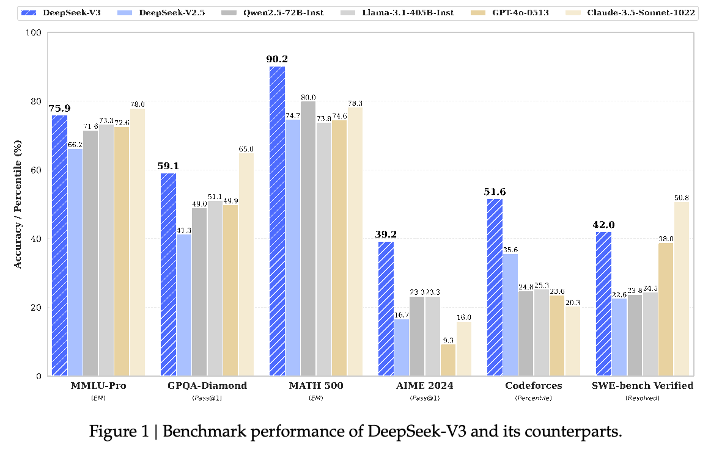
arXiv:2412.19437v2 [cs.CL] · 2025 年 2 月 18 日
1 引言 4
2 架构 6
2.1 基础架构 6
2.1.1 MLA 7
2.1.2 采用无辅助损失负载均衡的 DeepSeekMoE 8
2.2 MTP 10
3 基础设施 11
3.1 计算集群 11
3.2 训练框架 12
3.2.1 DualPipe 与计算通信重叠 12
3.2.2 跨节点 all-to-all 通信的高效实现 13
3.2.3 以极小开销大幅节省显存 14
3.3 FP8 训练 14
3.3.1 混合精度框架 15
3.3.2 提高量化和乘法运算的精度 16
3.3.3 低精度存储与通信 18
3.4 推理与部署 18
3.4.1 prefill 19
3.4.2 decoding 19
3.5 硬件设计建议 20
3.5.1 通信硬件 20
3.5.2 计算硬件 20
4 预训练 21
4.1 数据构建 21
4.2 超参数 22
4.3 长上下文扩展 23
4.4 评估 24
4.4.1 评估基准 24
4.4.2 评估结果 24
4.5 讨论 26
4.5.1 MTP 的消融研究 26
4.5.2 无辅助损失均衡策略的消融研究 26
4.5.3 batch 级负载均衡与序列级负载均衡 27
5 后训练 28
5.1 SFT 28
5.2 强化学习 29
5.2.1 RM 29
5.2.2 GRPO 30
5.3 评估 30
5.3.1 评估设置 30
5.3.2 标准评估 31
5.3.3 开放式评估 33
5.3.4 将 DeepSeek-V3 用作 GenRM 33
5.4 讨论 34
5.4.1 从 DeepSeek-R1 蒸馏 34
5.4.2 自奖励 34
5.4.3 MTP 评估 35
6 结论、局限与未来方向 35
A 贡献与致谢 45
B 低精度训练的消融研究 47
B.1 FP8 与 BF16 训练 47
B.2 关于块级量化的讨论 47
C 16B 辅助损失模型与无辅助损失模型的专家专门化模式 48
近年来，LLM 正在快速迭代与演进（Anthropic, 2024; Google, 2024; OpenAI, 2024a），逐步缩小与 AGI 的差距。除了闭源模型，DeepSeek 系列（DeepSeek-AI, 2024a,b,c; Guo et al., 2024）、LLaMA 系列（AI@Meta, 2024a,b; Touvron et al., 2023a,b）、Qwen 系列（Qwen, 2023, 2024a,b）和 Mistral 系列（Jiang et al., 2023; Mistral, 2024）等开源模型也取得了显著进展，努力缩小与闭源模型的差距。为进一步拓展开源模型的能力边界，我们扩大模型规模，推出 DeepSeek-V3：一个拥有 671B 参数、每个 token 激活 37B 参数的大型 MoE 模型。
我们始终着眼长远，追求强大的模型性能和低廉的成本。因此，在架构方面，DeepSeek-V3 仍采用 MLA（DeepSeek-AI, 2024c）实现高效推理，并采用 DeepSeekMoE（Dai et al., 2024）实现低成本训练。这两种架构已经在 DeepSeek-V2（DeepSeek-AI, 2024c）中得到验证，证明它们能够在实现高效训练与推理的同时维持强大的模型性能。在基础架构之外，我们实施了两项额外策略来进一步提升模型能力。首先，DeepSeek-V3 首创了无辅助损失负载均衡策略（Wang et al., 2024a），旨在尽量减小促进负载均衡给模型性能带来的不利影响。其次，DeepSeek-V3 采用 MTP 训练目标；我们观察到，这能够提高模型在评估基准上的整体性能。
为实现高效训练，我们支持 FP8 混合精度训练，并对训练框架进行了全面优化。低精度训练已成为高效训练的一种有前景的解决方案（Dettmers et al., 2022; Kalamkar et al., 2019; Narang et al., 2017; Peng et al., 2023b），其发展与硬件能力的进步密切相关（Luo et al., 2024; Micikevicius et al., 2022; Rouhani et al., 2023a）。在本工作中，我们引入 FP8 混合精度训练框架，并首次在超大规模模型上验证其有效性。通过支持 FP8 计算和存储，我们既加速了训练，也减少了 GPU 显存占用。在训练框架方面，我们设计了 DualPipe 算法来实现高效 PP，它的流水线气泡更少，并通过计算与通信重叠隐藏训练中的大部分通信。这种重叠使得模型规模进一步扩大时，只要保持计算通信比不变，我们仍能在跨节点使用细粒度专家的同时，实现接近零的 all-to-all 通信开销。此外，我们还开发了高效的跨节点 all-to-all 通信内核，以充分利用 InfiniBand（IB）和 NVLink 的带宽。我们进一步精细优化显存占用，使得不采用成本高昂的 TP 也能训练 DeepSeek-V3。通过这些工作的结合，我们实现了很高的训练效率。
在预训练期间，我们使用 14.8T 个高质量且多样化的 token 训练 DeepSeek-V3。预训练过程极为稳定。在整个训练过程中，我们没有遇到任何无法恢复的 loss spike，也没有需要回滚的情况。随后，我们对 DeepSeek-V3 进行两阶段的上下文长度扩展。第一阶段将最大上下文长度扩展至 32K，第二阶段进一步扩展至 128K。之后，我们对 DeepSeek-V3 的基础模型进行后训练，包括 SFT 和强化学习（RL），使其与人类偏好对齐，并进一步释放其潜力。在后训练阶段，我们从 DeepSeek-R1 系列模型中蒸馏推理能力，同时谨慎地保持模型准确性与（接下页）
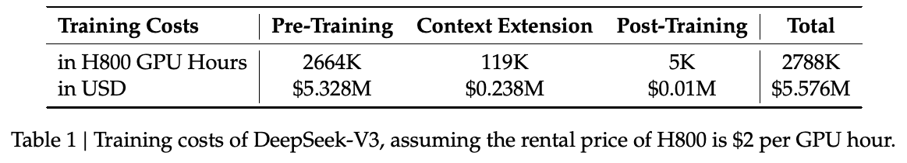
（接上页）生成长度之间的平衡。
我们在全面的基准集合上评估 DeepSeek-V3。尽管训练成本低廉，全面评估表明，DeepSeek-V3-Base 已成为当前最强的开源基础模型，尤其在代码和数学方面表现突出。其聊天版本也超越了其他开源模型，并在一系列标准基准与开放式基准上实现了与 GPT-4o、Claude-3.5-Sonnet 等领先闭源模型相当的性能。
最后，我们再次强调 DeepSeek-V3 的低廉训练成本，表 1 对此作了总结。这得益于我们对算法、框架和硬件进行的优化协同设计。在预训练阶段，DeepSeek-V3 每训练一万亿个 token 仅需 180K H800 GPU 小时，即在我们配备 2048 块 H800 GPU 的集群上运行 3.7 天。因此，我们在不到两个月内完成预训练，消耗 2664K GPU 小时。加上上下文长度扩展所需的 119K GPU 小时和后训练所需的 5K GPU 小时，DeepSeek-V3 完整训练仅需 2.788M GPU 小时。假设 H800 GPU 租赁价格为每 GPU 小时 2 美元，总训练成本仅为 557.6 万美元。请注意，上述成本仅包括 DeepSeek-V3 的正式训练，不包括此前与架构、算法或数据有关的研究和消融实验成本。
我们的主要贡献包括：
（接上页）R1 的验证和反思模式融入 DeepSeek-V3，显著提高了它的推理性能。同时，我们也保持了对 DeepSeek-V3 输出风格和长度的控制。
在本文后续部分，我们首先详细介绍 DeepSeek-V3 的模型架构（第 2 节）。随后介绍我们的基础设施，包括计算集群、训练框架、FP8 训练支持、推理部署策略以及对未来硬件设计的建议。接着介绍预训练流程，包括训练数据构建、超参数设置、长上下文扩展技术、相关评估和一些讨论（第 4 节）。之后讨论我们在后训练方面的工作，包括 SFT、强化学习（RL）、相应评估与讨论（第 5 节）。最后总结本工作，讨论 DeepSeek-V3 现有的局限，并提出未来研究的潜在方向（第 6 节）。
我们首先介绍 DeepSeek-V3 的基础架构，其特点是采用 MLA（DeepSeek-AI, 2024c）实现高效推理，以及采用 DeepSeekMoE（Dai et al., 2024）实现低成本训练。然后介绍 MTP 训练目标；我们观察到它提高了模型在评估基准上的整体性能。对于其他未明确提及的次要细节，DeepSeek-V3 遵循 DeepSeek-V2（DeepSeek-AI, 2024c）的设置。
DeepSeek-V3 的基础架构仍处于 Transformer（Vaswani et al., 2017）框架内。为实现高效推理和低成本训练，DeepSeek-V3 同样采用了已经在 DeepSeek-V2 中得到充分验证的 MLA 和 DeepSeekMoE。与 DeepSeek-V2 相比，一个不同之处是，我们额外引入了无辅助损失负载均衡（接下页）
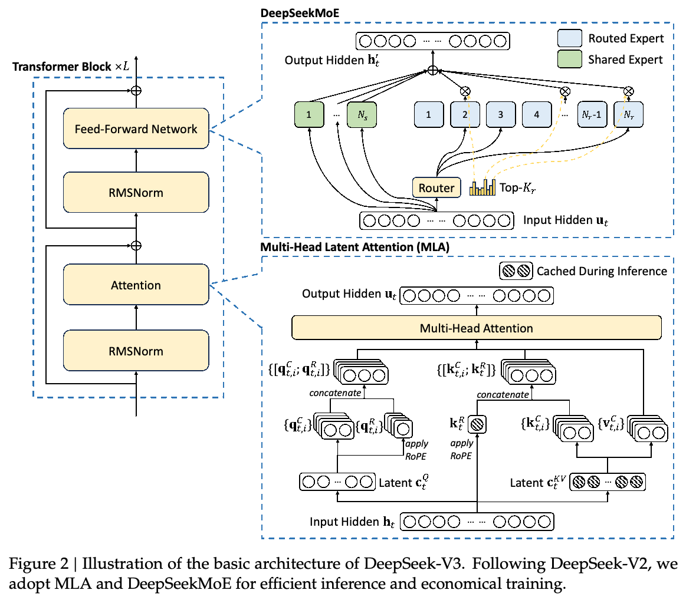
（接上页）策略（Wang et al., 2024a），用于 DeepSeekMoE，以减轻为确保负载均衡而导致的性能下降。图 2 展示了 DeepSeek-V3 的基础架构，本节将简要回顾 MLA 和 DeepSeekMoE 的细节。
在 attention 方面，DeepSeek-V3 采用 MLA 架构。令 \(d\) 表示 embedding 维度，\(n_{h}\) 表示 attention 头数，\(d_{h}\) 表示每个头的维度，\(h_{t} \in \mathbb{R} ^{d}\) 表示某个 attention 层中第 \(t\) 个 token 的 attention 输入。MLA 的核心是对 attention 的键和值进行低秩联合压缩，从而减少推理期间的键值（KV）缓存：
其中，\(c_{t}^{KV} \in \mathbb{R} ^{d_{c}}\) 是键和值的压缩潜在向量；\(d_{c}\)（\(\ll d_{h}n_{h}\)）表示 KV 压缩维度；\(W^{DKV} \in \mathbb{R} ^{d_{c}\times d}\) 表示降维投影矩阵；\(W^{UK}\)、\(W^{UV} \in \mathbb{R} ^{d_{h}n_{h}\times d_{c}}\) 分别是键和值的升维投影矩阵；\(W^{KR} \in \mathbb{R} ^{d_{h}^{R}\times d}\) 是用于产生携带 RoPE（Su et al., 2024）的解耦键的矩阵；RoPE(·) 表示应用 RoPE 矩阵的操作；[·; ·] 表示拼接。注意，在 MLA 中，生成期间只需缓存蓝框中的向量（即 \(c_{t}^{KV}\) 和 \(k_{t}^{R}\)），因此在保持与标准 MHA（Vaswani et al., 2017）相当性能的同时，显著减少了 KV cache。
对于 attention 查询，我们也进行低秩压缩，这可以减少训练期间激活值的显存占用：
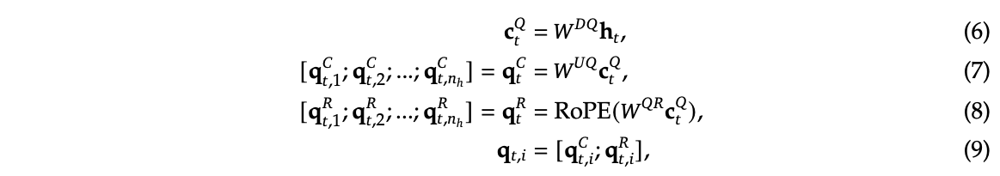
其中，\(c_{t}^{Q} \in \mathbb{R} ^{{d'}_{c}}\) 是查询的压缩潜在向量；\({d'}_{c}\)（\(\ll d_{h}n_{h}\)）表示查询压缩维度；\(W^{DQ} \in \mathbb{R} ^{{d'}_{c}\times d}\) 和 \(W^{UQ} \in \mathbb{R} ^{d_{h}n_{h}\times {d'}_{c}}\) 分别是查询的降维投影与升维投影矩阵；\(W^{QR} \in \mathbb{R} ^{d_{h}^{R}n_{h}\times {d'}_{c}}\) 是用于产生携带 RoPE 的解耦查询的矩阵。
最终，将 attention 查询（\(q_{t,i}\)）、键（\(k_{j,i}\)）和值（\(v_{j,i}^{C}\)）组合，得到最终的 attention 输出 \(u_{t}\)：
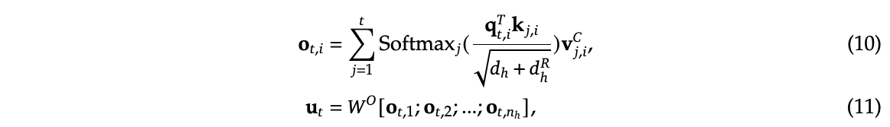
其中，\(W^{O} \in \mathbb{R} ^{d\times d_{h}n_{h}}\) 表示输出投影矩阵。
DeepSeekMoE 的基础架构。对于 FFN，DeepSeek-V3 采用 DeepSeekMoE 架构（Dai et al., 2024）。与 GShard（Lepikhin et al., 2021）等传统 MoE 架构相比，DeepSeekMoE 使用更细粒度的专家，并将部分专家分离为共享专家。令 \(u_{t}\) 表示第 \(t\) 个 token 的 FFN 输入，我们按如下方式计算 FFN 输出 \({h'}_{t}\)：
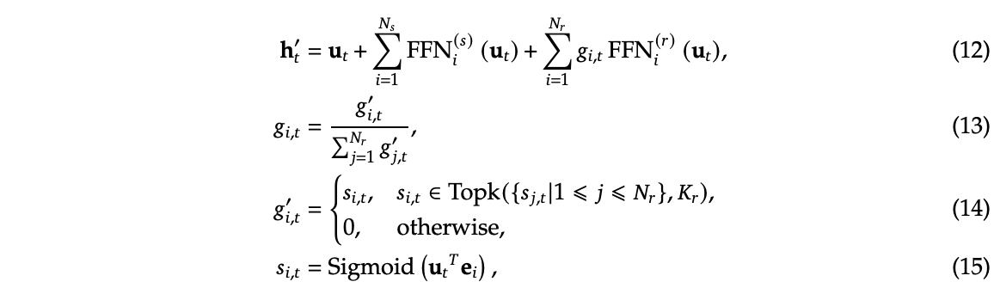
其中，\(N_{s}\) 和 \(N_{r}\) 分别表示共享专家和路由专家的数量；\(FFN_{i}^{(s)}(\cdot )\) 和 \(FFN_{i}^{(r)}(\cdot )\) 分别表示第 \(i\) 个共享专家和第 \(i\) 个路由专家；\(K_{r}\) 表示激活的路由专家数量；\(g_{i,t}\) 是第 \(i\) 个专家的门控值；\(s_{i,t}\) 是 token 与专家的亲和度；\(e_{i}\) 是第 \(i\) 个路由专家的中心向量；Topk(·, \(K\)) 表示第 \(t\) 个 token 与所有路由专家的亲和度分数中最高的 \(K\) 个分数组成的集合。与 DeepSeek-V2 略有不同，DeepSeek-V3 使用 sigmoid 函数计算亲和度分数，并对所有选中的亲和度分数进行归一化，得到门控值。
无辅助损失负载均衡。对于 MoE 模型，专家负载不均衡会导致路由坍塌（Shazeer et al., 2017），并降低 EP 场景中的计算效率。常规解决方案通常依靠辅助损失（Fedus et al., 2021; Lepikhin et al., 2021）避免负载不均衡。然而，过大的辅助损失会损害模型性能（Wang et al., 2024a）。为了在负载均衡和模型性能之间取得更好的权衡，我们首创了无辅助损失负载均衡策略（Wang et al., 2024a）来确保负载均衡。具体而言，我们为每个专家引入偏置项 \(b_{i}\)，并将其加到对应的亲和度分数 \(s_{i,t}\) 上，以确定 top-K 路由：
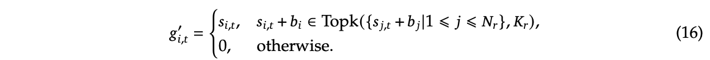
注意，偏置项仅用于路由。与 FFN 输出相乘的门控值仍然由原始亲和度分数 \(s_{i,t}\) 得到。在训练期间，我们持续监控每个训练步骤整个 batch 上的专家负载。在每步结束时，如果对应专家过载，就将其偏置项减小 \(\gamma\)；如果对应专家负载不足，就将其偏置项增大 \(\gamma\)。\(\gamma\) 是一个称为偏置更新速度的超参数。通过这种动态调整，DeepSeek-V3 在训练期间保持专家负载均衡，并获得比纯粹通过辅助损失促进负载均衡的模型更好的性能。
补充性的序列级辅助损失。虽然 DeepSeek-V3 主要依靠无辅助损失策略实现负载均衡，但为了防止任一单独序列内部出现极端不均衡，我们也使用补充性的序列级均衡损失：
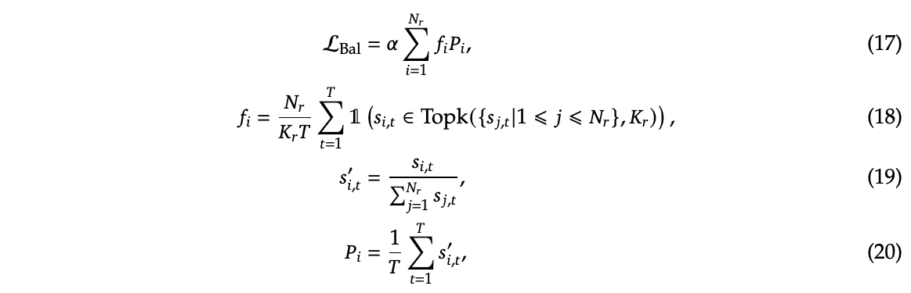
其中，均衡因子 \(\alpha\) 是一个超参数，在 DeepSeek-V3 中被设为极小值；1(·) 表示指示函数；\(T\) 表示一个序列中的 token 数量。序列级均衡损失促进每个序列上的专家负载均衡。
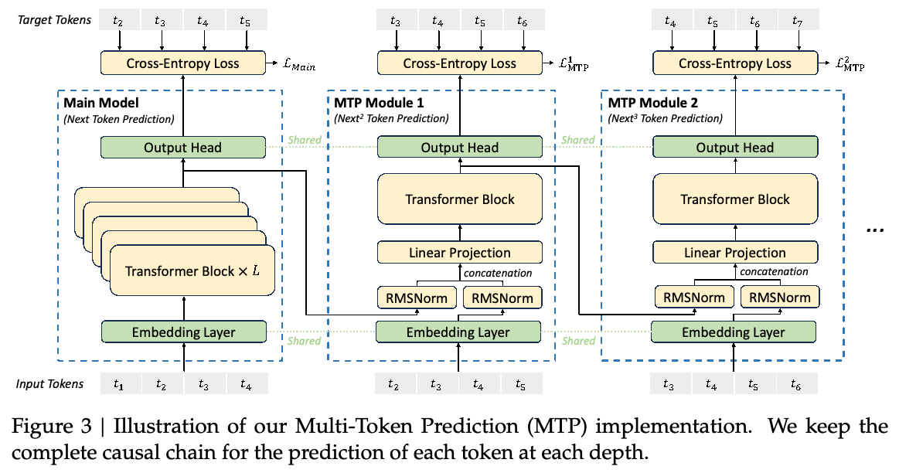
节点受限路由。与 DeepSeek-V2 使用的设备受限路由类似，DeepSeek-V3 也采用受限路由机制来限制训练期间的通信成本。简而言之，我们确保每个 token 最多被发送到 \(M\) 个节点；这些节点根据每个节点上所分布专家的最高 \(K_{r}/M\) 个亲和度分数之和来选择。在这一约束下，我们的 MoE 训练框架几乎能实现完全的计算通信重叠。
不丢弃 token。得益于有效的负载均衡策略，DeepSeek-V3 在整个训练期间保持了良好的负载均衡。因此，DeepSeek-V3 在训练期间不丢弃任何 token。此外，我们还实现了特定部署策略以确保推理负载均衡，因此 DeepSeek-V3 在推理期间也不丢弃 token。
受 Gloeckle et al.（2024）启发，我们为 DeepSeek-V3 研究并设置了 MTP 目标，将每个位置的预测范围扩展到多个未来 token。一方面，MTP 目标使训练信号更密集，可能提高数据效率。另一方面，MTP 可能使模型预先规划其表示，从而更好地预测未来 token。图 3 展示了我们的 MTP 实现。Gloeckle et al.（2024）利用独立输出头并行预测 D 个额外 token，而我们顺序预测额外 token，并在每个预测深度保持完整的因果链。本节介绍我们 MTP 实现的细节。
MTP 模块。具体来说，我们的 MTP 实现使用 \(D\) 个顺序模块来预测 \(D\) 个额外 token。第 \(k\) 个 MTP 模块由共享 embedding 层 Emb(·)、共享输出头 OutHead(·)、Transformer 块 \(TRM_{k}(\cdot )\) 和投影矩阵 \(M_{k} \in \mathbb{R} ^{d\times 2d}\) 组成。对于第 \(i\) 个输入 token \(t_{i}\)，在第 \(k\) 个预测深度，我们首先将第 \(i\) 个 token 在第 \(k\)−1 个深度的表示 \(h_{i}^{k-1} \in \mathbb{R} ^{d}\) 与第 \(i + k\) 个 token 的 embedding \(\operatorname{Emb}(t_{i+k}) \in \mathbb{R} ^{d}\)（接下页）
（接上页）通过线性投影组合：
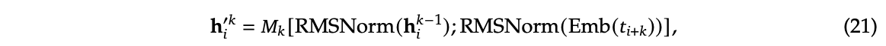
其中，[·; ·] 表示拼接。特别地，当 \(k\)=1 时，\(h_{i}^{k-1}\) 指主模型给出的表示。注意，每个 MTP 模块的 embedding 层均与主模型共享。组合后的 \({h'}_{i}^{k}\) 作为第 \(k\) 个深度 Transformer 块的输入，产生当前深度的输出表示 \(h_{i}^{k}\)：
其中，\(T\) 表示输入序列长度，\(i\):\(j\) 表示切片操作（包含左右两端边界）。最后，以 \(h_{i}^{k}\) 为输入，共享输出头计算第 \(k\) 个额外预测 token 的概率分布 \(P_{i+1+k}^{k} \in \mathbb{R} ^{V}\)，其中 \(V\) 是词表大小：
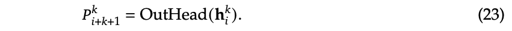
输出头 OutHead(·) 将表示线性映射为 logits，随后应用 Softmax(·) 函数，计算第 k 个额外 token 的预测概率。此外，每个 MTP 模块的输出头也与主模型共享。我们维持预测因果链的原则与 EAGLE（Li et al., 2024b）类似，但 EAGLE 的主要目标是 speculative decoding（Leviathan et al., 2023; Xia et al., 2023），而我们使用 MTP 来改善训练。
MTP 训练目标。对于每个预测深度，我们计算交叉熵损失 \(L_{MTP}^{k}\)：
其中，\(T\) 表示输入序列长度，\(t_{i}\) 表示第 \(i\) 个位置的真实 token，\(P_{i}^{k}[t_{i}]\) 表示第 \(k\) 个 MTP 模块给出的 \(t_{i}\) 的相应预测概率。最后，我们对所有深度的 MTP 损失取平均，并乘以权重因子 \(\lambda\)，得到总 MTP 损失 \(L_{MTP}\)，作为 DeepSeek-V3 的额外训练目标：
推理中的 MTP。我们的 MTP 策略主要旨在提高主模型的性能，因此在推理期间可以直接丢弃 MTP 模块，主模型仍能正常独立运行。此外，我们也可以将这些 MTP 模块用于 speculative decoding，以进一步改善生成延迟。
DeepSeek-V3 在配备 2048 块 NVIDIA H800 GPU 的集群上训练。H800 集群中的每个节点包含 8 块 GPU，在节点内部通过 NVLink 和 NVSwitch 连接。不同节点之间使用 InfiniBand（IB）互连进行通信。
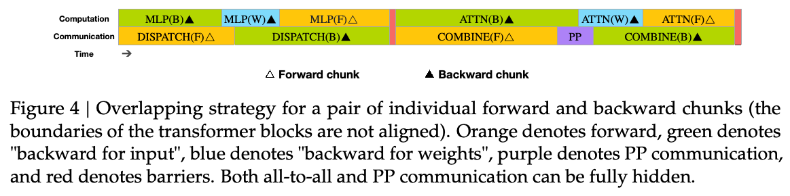
DeepSeek-V3 的训练由 HAI-LLM 框架支持，这是我们的工程师从零构建的高效轻量训练框架。总体而言，DeepSeek-V3 采用 16 路 PP（Qi et al., 2023a）、跨越 8 个节点的 64 路 EP（Lepikhin et al., 2021），以及 ZeRO-1 DP（Rajbhandari et al., 2020）。
为实现 DeepSeek-V3 的高效训练，我们实施了精细的工程优化。首先，我们设计 DualPipe 算法来实现高效 PP。与现有 PP 方法相比，DualPipe 的流水线气泡更少。更重要的是，它使前向和反向过程中的计算与通信阶段重叠，从而解决跨节点 EP 引入的大量通信开销问题。其次，我们开发了高效的跨节点 all-to-all 通信内核，以充分利用 IB 和 NVLink 带宽，并节省用于通信的流式多处理器（SM）。最后，我们精细优化了训练期间的显存占用，使得无需使用成本高昂的 TP 也能训练 DeepSeek-V3。
对于 DeepSeek-V3，跨节点 EP 引入的通信开销使计算通信比约为 1:1，效率不高。为应对这一挑战，我们设计了名为 DualPipe 的创新 PP 算法，它既通过有效重叠前向与反向计算通信阶段来加速模型训练，也减少了流水线气泡。
DualPipe 的关键思想是在一对独立的前向和反向块内重叠计算与通信。具体来说，我们将每个块划分为四个组成部分：attention、all-to-all dispatch、MLP 和 all-to-all combine。特别地，对于反向块，attention 和 MLP 又进一步各分成两部分：输入的反向计算和权重的反向计算，类似于 ZeroBubble（Qi et al., 2023b）。此外，我们还有一个 PP 通信组成部分。如图 4 所示，对于一对前向和反向块，我们重新安排这些组成部分，并手动调整分配给通信和计算的 GPU SM 比例。采用这种重叠策略，我们能确保 all-to-all 通信和 PP 通信在执行过程中都被完全隐藏。在高效重叠策略基础上，图 5 展示了完整的 DualPipe 调度。它采用双向流水线调度，从流水线两端同时输入 micro-batch，使很大一部分通信完全重叠。这种重叠也确保了在模型进一步扩大时，只要保持计算通信比不变，我们仍能使用跨节点细粒度专家，同时实现接近零的 all-to-all 通信开销。
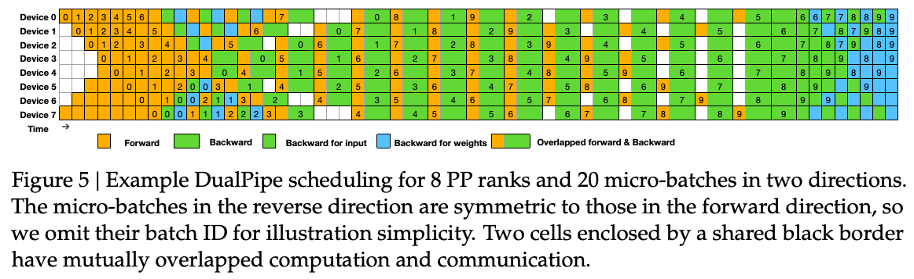
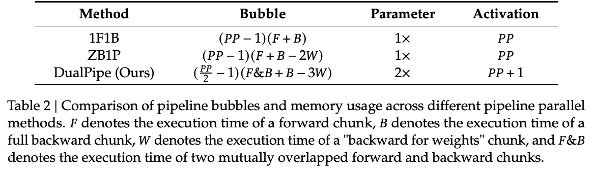
此外，即使在通信负担不重的更一般场景中，DualPipe 仍具有效率优势。表 2 总结了不同 PP 方法的流水线气泡和显存占用。如表中所示，相较于 ZB1P（Qi et al., 2023b）和 1F1B（Harlap et al., 2018），DualPipe 显著减少流水线气泡，而激活值峰值显存占用仅增加 1/PP 倍。虽然 DualPipe 需要保留两份模型参数，但由于训练时采用较大的 EP 规模，这不会显著增加显存消耗。与 Chimera（Li and Hoefler, 2021）相比，DualPipe 仅要求流水线阶段数和 micro-batch 数能被 2 整除，而不要求 micro-batch 数能被流水线阶段数整除。此外，对于 DualPipe，流水线气泡和激活值显存都不会随着 micro-batch 数增加而增加。
为确保 DualPipe 具有足够的计算性能，我们定制了高效的跨节点 all-to-all 通信内核（包括分发和合并），以减少用于通信的 SM 数量。这些内核的实现与 MoE 门控算法及集群网络拓扑进行了协同设计。具体来说，在我们的集群中，跨节点 GPU 通过 IB 全互连，节点内部通信通过 NVLink 处理。NVLink 提供 160 GB/s 的带宽，约为 IB（50 GB/s）的 3.2 倍。为了有效利用 IB 和 NVLink 的不同带宽，我们将每个 token 限制为最多分发到 4 个节点，从而减少 IB 流量。对每个 token，当路由决策完成后，它首先通过 IB 传输到目标节点中具有相同节点内索引的 GPU。到达目标节点后，我们尽力确保它立即通过 NVLink 转发到承载其目标专家的特定 GPU，而不被随后到达的 token 阻塞。这样，IB 和 NVLink 通信完全重叠，每个 token 能在每个节点高效选择平均 3.2 个专家，而不产生额外 NVLink 开销。这意味着，虽然 DeepSeek-V3（接下页）
（接上页）在实际中只选择 8 个路由专家，但可以将其增加到最多 13 个专家（4 个节点 × 每节点 3.2 个专家），同时保持相同的通信成本。总体而言，在这一通信策略下，只需 20 个 SM 就足以充分利用 IB 和 NVLink 的带宽。
具体来说，我们采用 warp 专门化技术（Bauer et al., 2014），将 20 个 SM 划分为 10 个通信通道。在分发过程中，（1）IB 发送、（2）IB 到 NVLink 的转发、（3）NVLink 接收由各自的 warp 处理。分配给每个通信任务的 warp 数量根据所有 SM 上的实际工作负载动态调整。同样，在合并过程中，（1）NVLink 发送、（2）NVLink 到 IB 的转发与累加、（3）IB 接收与累加也由动态调整的 warp 处理。此外，分发与合并内核都与计算流重叠，因此我们也考虑它们对其他 SM 计算内核的影响。具体来说，我们使用定制 PTX（Parallel Thread Execution）指令，并自动调优通信块大小，从而显著减少 L2 缓存使用以及对其他 SM 的干扰。
为减少训练期间的显存占用，我们使用以下技术。
重计算 RMSNorm 和 MLA 升维投影。在反向传播期间，我们重新计算所有 RMSNorm 操作和 MLA 升维投影，从而无需持续保存其输出激活值。这一策略仅引入很小的开销，却显著减少了存储激活值所需的显存。
在 CPU 中保存指数移动平均。在训练期间，我们保留模型参数的指数移动平均（EMA），以提前估计学习率衰减后的模型性能。EMA 参数存储在 CPU 内存中，并在每个训练步骤后异步更新。这种方法使我们能够维护 EMA 参数，而不产生额外显存或时间开销。
MTP 共享 embedding 和输出头。采用 DualPipe 策略时，我们将模型最浅的层（包括 embedding 层）与最深的层（包括输出头）部署在同一个 PP rank 上。这一安排使 MTP 模块和主模型的共享 embedding 与输出头能够在物理上共享参数和 gradient。这种物理共享机制进一步提高了显存效率。
受低精度训练近期进展（Dettmers et al., 2022; Noune et al., 2022; Peng et al., 2023b）启发，我们提出利用 FP8 数据格式训练 DeepSeek-V3 的细粒度混合精度框架。虽然低精度训练前景很大，但经常受到激活值、权重和 gradient 中 outlier 的限制（Fishman et al., 2024; He et al.; Sun et al., 2024）。尽管推理量化已取得显著进展（Frantar et al., 2022; Xiao et al., 2023），但证明低精度技术成功用于大规模语言模型（接下页）
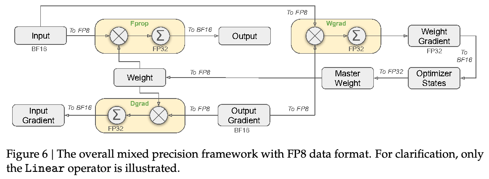
（接上页）预训练的研究相对较少（Fishman et al., 2024）。为应对这一挑战并有效扩展 FP8 格式的动态范围，我们引入细粒度量化策略：按 \(1\times N_{c}\) 个元素的小块（tile）分组，或按 \(N_{c} \times N_{c}\) 个元素的块（block）分组。相关的反量化开销在我们提高精度的累加过程中得到大幅缓解，这也是实现准确 FP8 GEMM 的关键。此外，为进一步降低 MoE 训练中的显存与通信开销，我们以 FP8 缓存和分发激活值，同时以 BF16 保存低精度优化器状态。我们在两个与 DeepSeek-V2-Lite 和 DeepSeek-V2 相近的模型规模上验证所提出的 FP8 混合精度框架，训练了约一万亿个 token（更多细节见附录 B.1）。特别地，与 BF16 基线相比，我们的 FP8 训练模型的相对损失误差始终低于 0.25%，完全处于训练随机性可接受的范围内。
基于低精度训练中广泛采用的技术（Kalamkar et al., 2019; Narang et al., 2017），我们提出用于 FP8 训练的混合精度框架。在这个框架中，大多数计算密集操作以 FP8 执行，而少数关键操作有策略地保留其原始数据格式，以平衡训练效率和数值稳定性。整体框架如图 6 所示。
首先，为加速模型训练，大多数核心计算内核，即 GEMM 操作，使用 FP8 精度实现。这些 GEMM 操作接受 FP8 张量作为输入，以 BF16 或 FP32 输出。如图 6 所示，与 Linear 算子相关的三个 GEMM，即 Fprop（前向传播）、Dgrad（激活值反向传播）和 Wgrad（权重反向传播），均以 FP8 执行。这一设计在理论上使计算速度相较于原始 BF16 方法翻倍。此外，FP8 Wgrad GEMM 允许以 FP8 保存激活值，用于反向传播。这显著减少了显存消耗。
尽管 FP8 格式具有效率优势，一些算子由于对低精度计算敏感，仍需要更高精度。另外，某些低成本算子也可使用更高精度，而对总训练成本的额外开销可忽略不计。因此，经过仔细研究，我们为以下组成部分保留原始精度（例如 BF16 或 FP32）：embedding 模块、输出头、MoE 门控模块、归一化算子和 attention 算子。这些有针对性的高精度保留确保了 DeepSeek-V3 稳定的训练动态。为进一步保证数值稳定性，我们以更高精度存储主权重、权重 gradient 和优化器状态。虽然（接下页）
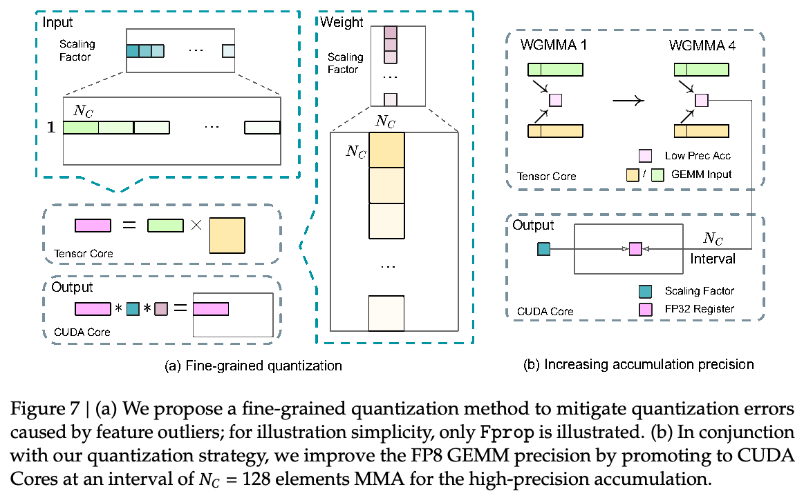
（接上页）这些高精度组成部分会带来一些显存开销，但在我们的分布式训练系统中，通过在多个 DP rank 之间高效分片，可以尽量减小其影响。
基于混合精度 FP8 框架，我们引入若干策略以提高低精度训练的准确性，同时关注量化方法与乘法运算过程。
细粒度量化。在低精度训练框架中，由于 FP8 格式的指数位数较少、动态范围有限，上溢和下溢是常见挑战。标准做法是将输入张量的最大绝对值缩放到 FP8 的最大可表示值，从而使输入分布与 FP8 格式可表示的范围对齐（Narang et al., 2017）。这种方法使低精度训练对激活值 outlier 高度敏感，可能严重降低量化精度。为解决这一问题，我们提出以更细粒度应用缩放的量化方法。如图 7(a) 所示，（1）对于激活值，我们按 1×128 小块分组和缩放元素（即每个 token、每 128 个通道）；（2）对于权重，我们按 128×128 块分组和缩放元素（即每 128 个输入通道、每 128 个输出通道）。这种方式根据较小元素组调整缩放因子，确保量化过程能更好地适应 outlier。在附录 B.2 中，我们进一步讨论将激活值像权重量化一样按块分组和缩放时出现的训练不稳定问题。
我们的方法中，一个关键改动是沿 GEMM 运算的内维度引入逐组缩放因子。标准 FP8 GEMM 不直接支持这一功能。然而，结合我们的精确 FP32 累加策略，它可以（接下页）
（接上页）得到高效实现。
值得关注的是，我们的细粒度量化策略与微缩放格式（Rouhani et al., 2023b）的思想高度一致，而 NVIDIA 下一代 GPU（Blackwell 系列）的 Tensor Core 已宣布支持量化粒度更小的微缩放格式（NVIDIA, 2024a）。我们希望这一设计能够为未来紧跟最新 GPU 架构的工作提供参考。
提高累加精度。低精度 GEMM 运算经常出现下溢问题，其准确性很大程度上取决于高精度累加，通常使用 FP32 精度完成（Kalamkar et al., 2019; Narang et al., 2017）。然而，我们观察到 NVIDIA H800 GPU 上的 FP8 GEMM 累加精度仅能保留约 14 位，显著低于 FP32 累加精度。当内维度 \(K\) 较大时，这个问题更加明显（Wortsman et al., 2023），而在增大 batch 大小和模型宽度的大规模模型训练中，这是典型场景。以 \(K\)=4096 的两个随机矩阵 GEMM 运算为例，在我们的初步测试中，Tensor Core 有限的累加精度造成了接近 2% 的最大相对误差。尽管存在这些问题，有限累加精度仍是一些 FP8 框架（NVIDIA, 2024b）的默认选项，严重限制了训练准确性。
为解决这一问题，我们采用将累加提升至 CUDA Core 以获得更高精度的策略（Thakkar et al., 2023），过程如图 7(\(b\)) 所示。具体来说，在 Tensor Core 执行 MMA（矩阵乘加）期间，中间结果以有限位宽累加。当达到 \(N_{C}\) 的间隔时，将这些部分结果复制到 CUDA Core 上的 FP32 寄存器，在那里执行全精度 FP32 累加。如前所述，我们的细粒度量化沿内维度 \(K\) 应用逐组缩放因子。这些缩放因子可在 CUDA Core 上高效相乘，作为反量化过程，额外计算成本极小。
值得注意的是，这一修改降低了单个 warpgroup 的 WGMMA（warpgroup 级矩阵乘加）指令发射速率。不过，在 H800 架构上，通常有两个 WGMMA 并发执行：当一个 warpgroup 执行提升操作时，另一个可以执行 MMA 操作。这一设计使两种操作重叠，维持 Tensor Core 的高利用率。根据实验，将 \(N_{C}\) 设置为 128 个元素，相当于 4 个 WGMMA，是能够显著提高精度且不引入大量开销的最小累加间隔。
尾数优先于指数。以往工作（NVIDIA, 2024b; Peng et al., 2023b; Sun et al., 2019b）采用混合 FP8 格式，在 Fprop 中使用 E4M3（4 位指数、3 位尾数），在 Dgrad 和 Wgrad 中使用 E5M2（5 位指数、2 位尾数）。与此不同，我们为所有张量采用 E4M3 格式以获得更高精度。我们认为这一方法的可行性源于细粒度量化策略，即小块级和块级缩放。通过对较小元素组操作，我们的方法实际上在这些分组元素之间共享指数位，减轻动态范围有限的影响。
在线量化。张量级量化框架（NVIDIA, 2024b; Peng et al., 2023b）使用延迟量化，保留此前迭代中最大绝对（接下页）
（接上页）值的历史，以推断当前值。为确保缩放因子准确并简化框架，我们在线计算每个 1×128 激活值小块或 128×128 权重块的最大绝对值。基于该值推导缩放因子，然后在线将激活值或权重量化为 FP8 格式。
结合 FP8 训练框架，我们进一步将缓存的激活值与优化器状态压缩为更低精度格式，从而减少显存消耗和通信开销。
低精度优化器状态。我们采用 BF16 数据格式代替 FP32，记录 AdamW（Loshchilov and Hutter, 2017）优化器中的一阶和二阶矩，没有造成可观察到的性能下降。但主权重（由优化器存储）和 gradient（用于 batch 大小累积）仍保留为 FP32，以确保整个训练过程中的数值稳定性。
低精度激活值。如图 6 所示，Wgrad 操作以 FP8 执行。为减少显存消耗，用 FP8 格式缓存激活值以供 Linear 算子的反向传播使用，是自然的选择。不过，为实现低成本高精度训练，我们对一些算子作了特殊处理：
低精度通信。通信带宽是 MoE 模型训练中的关键瓶颈。为缓解这一问题，我们在 MoE 升维投影之前将激活值量化为 FP8，然后执行分发组件，这与 MoE 升维投影中的 FP8 Fprop 兼容。与 attention 算子之后的 Linear 输入一样，该激活值的缩放因子为 2 的整数次幂。对 MoE 降维投影之前的激活值 gradient 也采用类似策略。对于前向和反向合并组件，我们保留 BF16，以维持训练流程关键部分的精度。
我们在 H800 集群上部署 DeepSeek-V3，其中每个节点内的 GPU 使用 NVLink 互连，整个集群中的所有 GPU 通过 IB 全互连。为同时确保在线服务的服务等级目标（SLO）和高吞吐量，我们采用以下将 prefill 阶段与 decoding 阶段分离的部署策略。
Prefill 阶段的最小部署单元由 4 个节点、32 块 GPU 组成。Attention 部分采用结合 SP 的 4 路 TP（TP4），并配合 8 路 DP（DP8）。较小的 TP 规模 4 限制了 TP 通信开销。对于 MoE 部分，我们使用 32 路 EP（EP32），确保每个专家处理足够大的 batch，从而提高计算效率。MoE all-to-all 通信采用与训练相同的方法：先通过 IB 跨节点传输 token，然后通过 NVLink 在节点内 GPU 之间转发。特别地，对浅层中的稠密 MLP，我们使用 1 路 TP 以节省 TP 通信。
为实现 MoE 部分不同专家间的负载均衡，我们需要确保每块 GPU 处理大致相同数量的 token。为此，我们引入冗余专家部署策略，复制高负载专家并冗余部署。高负载专家根据在线部署期间收集的统计数据识别，并定期调整（例如每 10 分钟）。确定冗余专家集合后，我们根据观察到的负载，在节点内各 GPU 之间仔细重新安排专家，力求在不增加跨节点 all-to-all 通信开销的情况下，尽量平衡 GPU 负载。部署 DeepSeek-V3 时，我们为 prefill 阶段设置 32 个冗余专家。每块 GPU 除承载原有的 8 个专家外，还承载一个额外的冗余专家。
此外，在 prefill 阶段，为提高吞吐量并隐藏 all-to-all 通信和 TP 通信开销，我们同时处理两个计算工作量相近的 micro-batch，将一个 micro-batch 的 attention 和 MoE 与另一个的 dispatch 和 combine 重叠。
最后，我们正在探索专家的动态冗余策略，每块 GPU 承载更多专家（例如 16 个），但每个推理步骤只激活其中 9 个。在每层 all-to-all 操作开始之前，我们即时计算全局最优路由方案。由于 prefill 阶段的计算量很大，计算这一方案的开销几乎可以忽略。
在 decoding 期间，我们将共享专家视为路由专家。从这一角度看，每个 token 在路由时选择 9 个专家，共享专家被视为始终会被选择的高负载专家。Decoding 阶段的最小部署单元由 40 个节点、320 块 GPU 组成。Attention 部分采用结合 SP 的 TP4，并配合 DP80，而 MoE 部分使用 EP320。对于 MoE 部分，每块 GPU 仅承载一个专家，64 块 GPU 负责承载冗余专家和共享专家。分发与合并部分的 all-to-all 通信通过 IB 上的直接点对点传输进行，以实现低延迟。此外，我们利用 IBGDA（NVIDIA, 2022）技术进一步降低延迟并提高通信效率。
与 prefill 类似，我们根据在线服务的专家负载统计，按一定间隔定期确定冗余专家集合。但由于每块 GPU 只承载一个专家，我们无需重新安排专家。我们也在探索 decoding 的动态冗余策略，不过这需要更细致地优化计算全局最优路由方案的算法，并将其与分发内核融合，以降低开销。
此外，为提高吞吐量并隐藏 all-to-all 通信开销，我们也在探索在 decoding 阶段同时处理两个计算工作量相近的 micro-batch。与 prefill 不同，attention 在 decoding 阶段占用更大比例的时间。因此，我们将一个 micro-batch 的 attention 与另一个的 dispatch+MoE+combine 重叠。Decoding 阶段每个专家的 batch 大小相对较小（通常在 256 个 token 以内），瓶颈是显存访问而非计算。由于 MoE 部分只需加载一个专家的参数，显存访问开销很小，因此使用较少的 SM 不会显著影响整体性能。所以，为避免影响 attention 部分的计算速度，我们可以仅分配少量 SM 给 dispatch+MoE+combine。
基于我们对 all-to-all 通信和 FP8 训练方案的实现，我们向 AI 硬件厂商提出以下芯片设计建议。
在 DeepSeek-V3 中，我们实现计算与通信重叠，以在计算过程中隐藏通信延迟。与串行计算和通信相比，这显著降低了对通信带宽的依赖。但当前通信实现依赖昂贵的 SM（例如，我们为此分配了 H800 GPU 的 132 个 SM 中的 20 个），限制了计算吞吐量。此外，使用 SM 进行通信效率很低，因为 Tensor Core 完全没有得到充分利用。
当前，SM 主要为 all-to-all 通信执行以下任务：
我们期待未来厂商开发硬件，将这些通信任务从宝贵的计算单元 SM 上卸载，作为 GPU 协处理器，或类似 NVIDIA SHARP（Graham et al., 2016）的网络协处理器。此外，为降低应用编程复杂度，我们希望这类硬件从计算单元视角统一 IB（横向扩展）与 NVLink（纵向扩展）网络。通过这一统一接口，计算单元可基于简单原语提交通信请求，轻松在整个 IB-NVLink 统一域内完成读取、写入、多播和归约等操作。
提高 Tensor Core 中 FP8 GEMM 的累加精度。在 NVIDIA Hopper 架构当前的 Tensor Core 实现中，FP8 GEMM 的累加精度有限。基于最大指数右移对齐 32 个尾数乘积后，Tensor Core 只使用每个尾数乘积最高的 14 位进行加法，（接下页）
（接上页）并截断超出这一范围的位。将加法结果累加到寄存器也采用 14 位精度。我们的实现通过在 CUDA Core 中将 128 次 FP8×FP8 乘法的加法结果以 FP32 精度累加到寄存器，部分缓解了这一限制。虽然这有助于成功实现 FP8 训练，但它仅是由于 Hopper 架构在 FP8 GEMM 累加精度方面的硬件不足而作出的折中。未来芯片需要采用更高精度。
支持小块级和块级量化。当前 GPU 仅支持逐张量量化，缺乏对我们的小块级和块级量化这类细粒度量化的原生支持。在当前实现中，当达到 \(N_{C}\) 间隔时，部分结果从 Tensor Core 复制到 CUDA Core，乘以缩放因子，并加到 CUDA Core 上的 FP32 寄存器中。虽然结合精确 FP32 累加策略后反量化开销显著减小，但 Tensor Core 与 CUDA Core 之间频繁的数据移动仍限制计算效率。因此，我们建议未来芯片通过使 Tensor Core 能接收缩放因子并执行带分组缩放的 MMA，来支持细粒度量化。这样，整个部分和累加与反量化过程都可以直接在 Tensor Core 内完成，直到产生最终结果，避免频繁移动数据。
支持在线量化。尽管我们的研究证明了在线量化的有效性，当前实现仍难以高效支持它。现有流程中，我们需要从 HBM（高带宽内存）读取 128 个 BF16 激活值（上一步计算的输出）进行量化，然后将量化后的 FP8 值写回 HBM，之后又为 MMA 再次读取。为解决这一低效问题，我们建议未来芯片将 FP8 类型转换和 TMA（Tensor Memory Accelerator）访问整合为单一融合操作，使量化能在激活值从全局显存传输到共享内存期间完成，避免频繁读写。我们也建议支持 warp 级类型转换指令来加速，进一步方便层归一化和 FP8 类型转换的融合。另一种选择是采用近存计算，在 HBM 附近放置计算逻辑。这样，从 HBM 读入 GPU 时可直接将 BF16 元素转换为 FP8，将片外内存访问减少约 50%。
支持转置 GEMM 运算。当前架构使矩阵转置与 GEMM 运算的融合很繁琐。在我们的流程中，前向传播期间的激活值被量化为 1×128 FP8 小块并存储。在反向传播期间，需要读取矩阵、反量化、转置、重新量化为 128×1 小块，再保存到 HBM。为减少显存操作，我们建议未来芯片对训练与推理所需的精度，支持在 MMA 运算之前直接从共享内存转置读取矩阵。结合 FP8 格式转换与 TMA 访问的融合，这一改进将显著简化量化流程。
相较于 DeepSeek-V2，我们通过提高数学和编程样本比例来优化预训练语料，同时将多语言覆盖范围从（接下页）
（接上页）英语和中文扩展到更多语言。此外，我们改进了数据处理流程，在维持语料多样性的同时尽量减少冗余。受 Ding et al.（2024）启发，我们采用文档打包方法保证数据完整性，但在训练期间不使用跨样本 attention 掩码。最终，以我们的 tokenizer 计，DeepSeek-V3 的训练语料包含 14.8T 个高质量且多样化的 token。
在 DeepSeekCoder-V2（DeepSeek-AI, 2024a）的训练过程中，我们观察到中间填充（Fill-in-Middle，FIM）策略在使模型能根据上下文线索准确预测中间文本的同时，不会损害下一 token 预测能力。与 DeepSeekCoder-V2 一致，我们也在 DeepSeek-V3 预训练中采用 FIM 策略。具体而言，我们使用前缀—后缀—中间（Prefix-Suffix-Middle，PSM）框架，按如下方式组织数据：
这一结构作为预打包流程的一部分，在文档级应用。FIM 策略的应用比例为 0.1，与 PSM 框架一致。
DeepSeek-V3 的 tokenizer 采用字节级 BPE（Shibata et al., 1999），词表扩展至 128K 个 token。我们修改了预 tokenizer 与 tokenizer 训练数据，以优化多语言压缩效率。此外，相较于 DeepSeek-V2，新的预 tokenizer 引入了组合标点和换行符的 token。但当模型处理末尾没有换行符的多行提示时，尤其是少样本评估提示，这一技巧可能引入 token 边界偏差（Lundberg, 2023）。为解决这一问题，我们在训练期间随机拆分一定比例的这种组合 token，使模型接触更多特殊情况并减轻偏差。
模型超参数。我们将 Transformer 层数设为 61，隐藏维度设为 7168。所有可学习参数以标准差 0.006 随机初始化。在 MLA 中，attention 头数 \(n_{h}\) 设为 128，每头维度 \(d_{h}\) 设为 128。KV 压缩维度 \(d_{c}\) 设为 512，查询压缩维度 \({d'}_{c}\) 设为 1536。对于解耦查询和键，每头维度 \(d_{h}^{R}\) 设为 64。除前三层外，我们将所有 FFN 替换为 MoE 层。每个 MoE 层包含 1 个共享专家和 256 个路由专家，每个专家的中间隐藏维度为 2048。在路由专家中，每个 token 激活 8 个专家，并确保每个 token 最多发送到 4 个节点。MTP 深度 \(D\) 设为 1，即除紧接着的下一个 token 外，每个 token 再预测一个额外 token。与 DeepSeek-V2 一样，DeepSeek-V3 也在压缩潜在向量之后使用额外的 RMSNorm 层，并在宽度瓶颈处乘以额外缩放因子。在这一配置下，DeepSeek-V3 总参数量为 671B，每个 token 激活 37B 参数。
训练超参数。我们采用 AdamW 优化器（Loshchilov and Hutter, 2017），超参数设置为 \(\beta _{1}=0.9\)、\(\beta _{2}=0.95\)、weight_decay=0.1。预训练期间最大序列长度设为 4K，在 14.8T 个 token 上预训练 DeepSeek-V3。学习率调度方面，首先在前 2K 步内从 0 线性增加至 \(2.2\times 10^{-4}\)。随后保持 \(2.2\times 10^{-4}\) 的恒定学习率，直到模型消耗 10T 个训练 token。之后在 4.3T 个 token 上遵循余弦衰减曲线，逐步将学习率降至 \(2.2\times 10^{-5}\)。在最后 500B 个 token 的训练期间，前 333B 个 token 保持 \(2.2\times 10^{-5}\) 的恒定学习率，在剩余部分切换至另一恒定学习率（接下页）
（接上页）7.\(3\times 10^{-6}\)，用于剩余的 167B 个 token。Gradient 裁剪范数设为 1.0。我们采用 batch 大小调度策略：在前 469B 个 token 的训练中，将 batch 大小从 3072 逐步增加至 15360，在剩余训练中保持 15360。我们利用 PP，将模型不同层部署到不同 GPU 上；对每一层，路由专家均匀部署在属于 8 个节点的 64 块 GPU 上。对于节点受限路由，每个 token 最多发送到 4 个节点（即 \(M\)=4）。无辅助损失负载均衡方面，前 14.3T 个 token 的偏置更新速度 \(\gamma\) 设为 0.001，剩余 500B 个 token 设为 0.0。对于均衡损失，\(\alpha\) 设为 0.0001，仅用于避免单一序列内部出现极端不均衡。MTP 损失权重 \(\lambda\) 在前 10T 个 token 中设为 0.3，在剩余 4.8T 个 token 中设为 0.1。
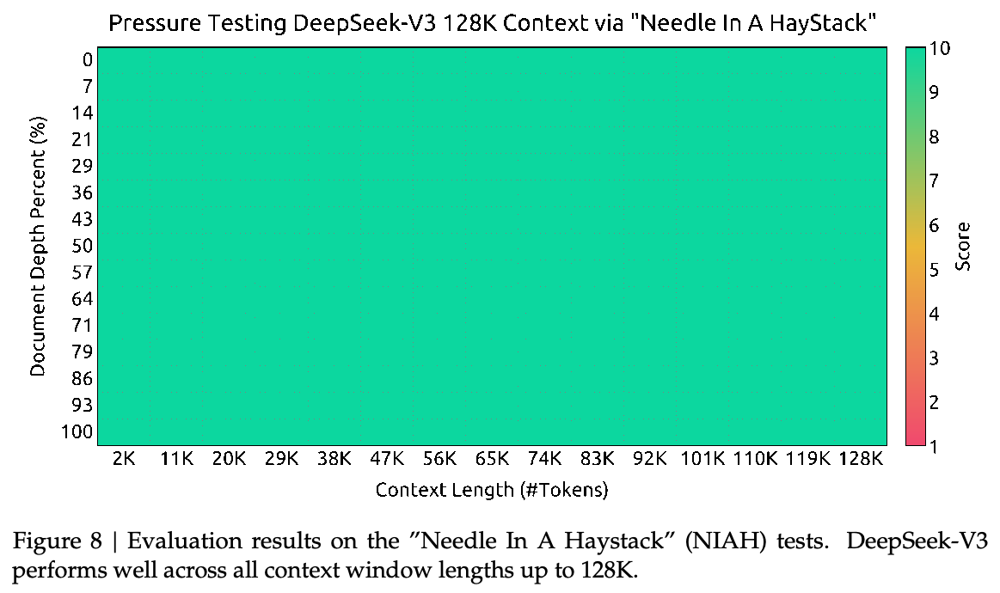
我们采用与 DeepSeek-V2（DeepSeek-AI, 2024c）类似的方法，使 DeepSeek-V3 具备长上下文能力。在预训练阶段之后，我们应用 YaRN（Peng et al., 2023a）扩展上下文，并执行两个额外训练阶段，每阶段 1000 步，逐步将上下文窗口从 4K 扩展到 32K，再到 128K。YaRN 配置与 DeepSeek-V2 一致，仅应用于解耦共享键 \(k_{t}^{R}\)。两个阶段的超参数相同，尺度 \(s\)=40、\(\alpha =1\)、\(\beta =32\)，缩放因子 \(\sqrt{t}=0.1 \operatorname{ln} s+1\)。第一阶段序列长度为 32K，batch 大小为 1920；第二阶段序列长度增加到 128K，batch 大小减少到 480。两个阶段的学习率都设为 \(7.3\times 10^{-6}\)，与预训练阶段的最终学习率一致。
通过这两阶段扩展训练，DeepSeek-V3 能处理长度高达 128K 的输入，同时维持强大的性能。图 8 表明，SFT 后的 DeepSeek-V3 在“Needle-in-a-Haystack”（Needle In A Haystack，NIAH）测试上取得显著表现，在最长 128K 的各个上下文窗口长度上展现出一致的稳健性。
DeepSeek-V3 基础模型在以英语和中文为主的多语言语料上预训练，因此我们主要在一系列英语和中文基准上评估其性能，同时也使用一个多语言基准。评估基于集成于 HAI-LLM 框架中的内部评估框架。所用基准按类别列出如下，单下划线表示中文基准，双下划线表示多语言基准：
多学科多项选择数据集包括 MMLU（Hendrycks et al., 2020）、MMLU-Redux（Gema et al., 2024）、MMLU-Pro（Wang et al., 2024b）、MMMLU（OpenAI, 2024b）、C-Eval（Huang et al., 2023）和 CMMLU（Li et al., 2023）。
语言理解与推理数据集包括 HellaSwag（Zellers et al., 2019）、PIQA（Bisk et al., 2020）、ARC（Clark et al., 2018）和 BigBench Hard（BBH）（Suzgun et al., 2022）。
闭卷问答数据集包括 TriviaQA（Joshi et al., 2017）和 NaturalQuestions（Kwiatkowski et al., 2019）。
阅读理解数据集包括 RACE（Lai et al., 2017）、DROP（Dua et al., 2019）、C3（Sun et al., 2019a）和 CMRC（Cui et al., 2019）。
指代消歧数据集包括 CLUEWSC（Xu et al., 2020）和 WinoGrande（Sakaguchi et al., 2019）。
语言建模数据集包括 Pile（Gao et al., 2020）。
中文理解与文化数据集包括 CCPM（Li et al., 2021）。
数学数据集包括 GSM8K（Cobbe et al., 2021）、MATH（Hendrycks et al., 2021）、MGSM（Shi et al., 2023）和 CMath（Wei et al., 2023）。
代码数据集包括 HumanEval（Chen et al., 2021）、LiveCodeBench-Base（0801–1101）（Jain et al., 2024）、MBPP（Austin et al., 2021）和 CRUXEval（Gu et al., 2024）。
标准化考试包括 AGIEval（Zhong et al., 2023）。注意，AGIEval 同时包含英语和中文子集。
延续此前工作（DeepSeek-AI, 2024b,c），我们对 HellaSwag、PIQA、WinoGrande、RACE-Middle、RACE-High、MMLU、MMLU-Redux、MMLU-Pro、MMMLU、ARC-Easy、ARC-Challenge、C-Eval、CMMLU、C3 和 CCPM 等数据集采用基于 PPL 的评估；对 TriviaQA、NaturalQuestions、DROP、MATH、GSM8K、MGSM、HumanEval、MBPP、LiveCodeBench-Base、CRUXEval、BBH、AGIEval、CLUEWSC、CMRC 和 CMath 采用基于生成的评估。此外，我们对 Pile-test 执行基于语言建模的评估，使用 BPB（Bits-Per-Byte）作为指标，确保使用不同 tokenizer 的模型之间能够公平比较。
表 3 比较了 DeepSeek-V3 基础模型与最先进的开源基础模型，包括 DeepSeek-V2-Base（DeepSeek-AI, 2024c）（我们的上一版本）、Qwen2.5 72B Base（Qwen, 2024b）和 LLaMA-3.1 405B Base（AI@Meta, 2024b）。我们使用内部评估框架评估所有模型，确保它们使用相同评估设置。请注意，由于过去几个月我们的评估框架发生变化，性能（接下页）
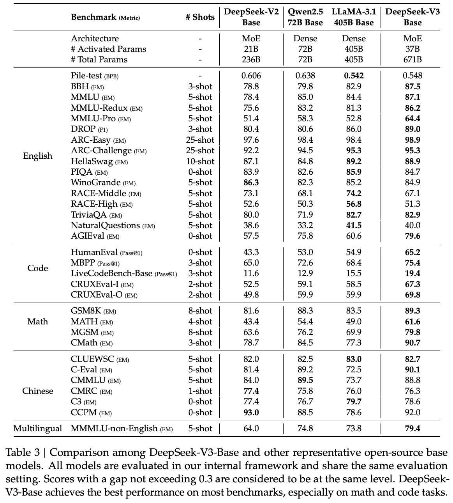
（接上页）方面，DeepSeek-V2-Base 与我们此前报告的结果略有不同。总体而言，DeepSeek-V3-Base 全面超越 DeepSeek-V2-Base 和 Qwen2.5 72B Base，并在多数基准上超过 LLaMA-3.1 405B Base，实际上成为最强的开源模型。
更具体地，我们分别将 DeepSeek-V3-Base 与其他开源基础模型比较。（1）与 DeepSeek-V2-Base 相比，由于模型架构改进、模型规模与训练 token 数增加，以及数据质量提升，DeepSeek-V3-Base 如预期取得显著更好的性能。（2）与最先进的中文开源模型 Qwen2.5 72B Base 相比，DeepSeek-V3-Base 仅使用其一半的激活参数，也表现出显著优势，（接下页）
（接上页）尤其是在英语、多语言、代码和数学基准上。对于中文基准，除了中文多学科多项选择任务 CMMLU，DeepSeek-V3-Base 也表现优于 Qwen2.5 72B。（3）与最大开源模型 LLaMA-3.1 405B Base 相比，后者激活参数是我们的 11 倍，DeepSeek-V3-Base 在多语言、代码和数学基准上仍展现出明显更好的性能。对于英语和中文语言基准，DeepSeek-V3-Base 表现相当或更好，在 BBH、MMLU 系列、DROP、C-Eval、CMMLU 和 CCPM 上尤其出色。
得益于高效架构与全面工程优化，DeepSeek-V3 实现了极高的训练效率。在我们的训练框架与基础设施下，DeepSeek-V3 每训练一万亿个 token 仅需 180K H800 GPU 小时，远低于训练 72B 或 405B 稠密模型的成本。
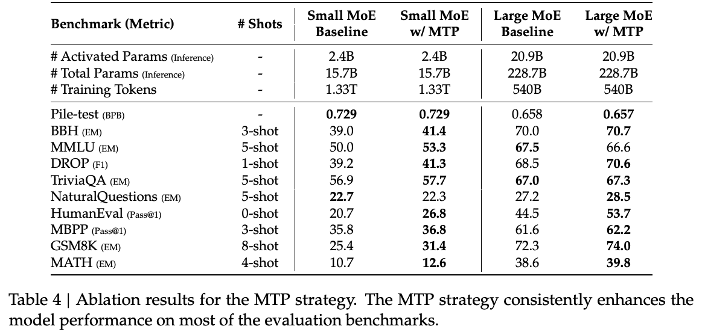
表 4 展示了 MTP 策略的消融结果。具体而言，我们在两个不同规模的基线模型上验证 MTP 策略。在小规模下，我们在 1.33T 个 token 上训练总参数量 15.7B 的基线 MoE 模型；在大规模下，在 540B 个 token 上训练总参数量 228.7B 的基线 MoE 模型。在此基础上，保持训练数据和其他架构相同，为它们附加深度为 1 的 MTP 模块，并使用 MTP 策略训练两个模型用于比较。注意，在推理期间我们直接丢弃 MTP 模块，因此所比较模型的推理成本完全相同。从表中可以看出，MTP 策略在多数评估基准上持续提高模型性能。
表 5 展示了无辅助损失均衡策略的消融结果。我们在两个不同规模的基线模型上验证该策略。在小规模下，我们在 1.33T 个 token 上训练总参数量 15.7B 的基线 MoE 模型；在大规模下，在 578B 个 token 上训练总参数量 228.7B 的基线 MoE 模型。
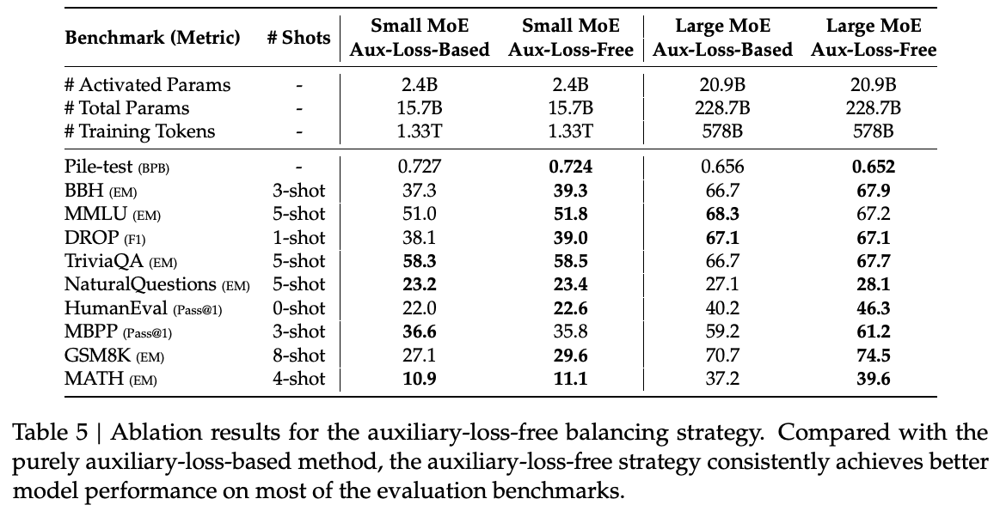
两个基线模型都仅使用辅助损失促进负载均衡，并采用带 top-K 亲和度归一化的 sigmoid 门控函数。它们控制辅助损失强度的超参数分别与 DeepSeek-V2-Lite 和 DeepSeek-V2 相同。在这两个基线模型基础上，保持训练数据和其他架构不变，移除全部辅助损失并引入无辅助损失均衡策略进行比较。从表中可以观察到，无辅助损失策略在多数评估基准上持续取得更好的模型性能。
无辅助损失均衡与序列级辅助损失的关键区别在于均衡范围：前者是 batch 级，后者是序列级。与序列级辅助损失相比，batch 级均衡施加了更灵活的约束，因为它不强制每个序列内的领域负载均衡。这种灵活性使专家能更好地专门处理不同领域。为验证这一点，我们记录并分析了一个 16B 辅助损失基线模型和一个 16B 无辅助损失模型在 Pile 测试集不同领域上的专家负载。如图 9 所示，我们观察到，无辅助损失模型如预期表现出更明显的专家专门化模式。
为进一步研究这种灵活性与模型性能优势之间的关联，我们额外设计并验证了 batch 级辅助损失，鼓励每个训练 batch 上的负载均衡，而非每个序列。实验结果表明，在达到相近程度的 batch 级负载均衡时，batch 级辅助损失也能取得与无辅助损失方法相近的模型性能。具体来说，在 1B MoE 模型实验中，验证损失分别为：2.258（序列级辅助损失）、2.253（无辅助损失方法）和 2.253（batch 级辅助损失）。在 3B MoE 模型上也观察到类似结果：采用序列级辅助损失的模型验证损失为 2.085，而采用无辅助损失方法或 batch 级辅助损失的模型验证损失同为 2.080。
此外，虽然 batch 级负载均衡方法表现出一致的性能优势，但在效率上也面临两个潜在挑战：（1）某些（接下页）
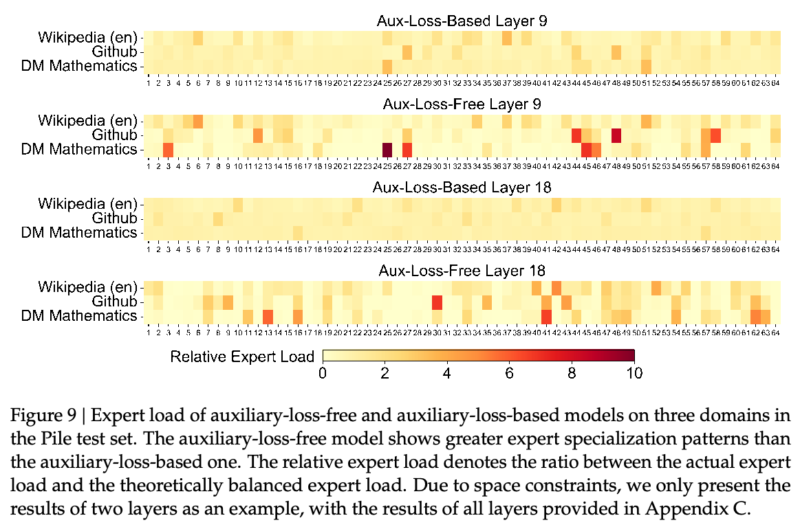
（接上页）序列或 mini-batch 内部的负载不均衡；（2）推理期间领域偏移导致的负载不均衡。第一个挑战通过我们的训练框架自然解决：框架采用大规模 EP 与 DP，保证每个 micro-batch 足够大。对于第二个挑战，我们也设计并实现了采用冗余专家部署的高效推理框架，见第 3.4 节，以克服这一问题。
我们整理的指令微调数据集包含跨多个领域的 1.5M 个实例，每个领域根据其具体需求采用不同的数据创建方法。
推理数据。对于推理相关数据集，包括数学、编程竞赛题和逻辑谜题，我们利用内部 DeepSeek-R1 模型生成数据。具体而言，虽然 R1 生成的数据准确性很强，但存在过度思考、格式不佳和长度过长等问题。我们的目标是在 R1 生成推理数据的高准确性与常规格式推理数据的清晰简洁之间取得平衡。
为了建立这一方法，我们首先使用结合 SFT 与强化学习（RL）的训练流程，开发面向代码、数学或通用推理等特定领域的专家模型。该专家模型充当最终模型的数据生成器。训练过程为每个实例生成两种不同的 SFT 样本：第一种将问题与原始回答配对，格式为 <问题, 原始回答>；第二种在问题和 R1 回答之外加入系统提示，（接下页）
（接上页）格式为 <系统提示, 问题, R1 回答>。
系统提示经过精心设计，包含指导模型生成带有反思和验证机制回答的指令。在 RL 阶段，模型利用高温度采样生成回答，即使没有明确的系统提示，也能融合 R1 生成数据与原始数据中的模式。经过数百个 RL 步骤，中间 RL 模型学会融入 R1 的模式，从而有策略地提升整体性能。
完成 RL 训练阶段后，我们使用拒绝采样为最终模型整理高质量 SFT 数据，以专家模型作为数据生成来源。这一方法确保最终训练数据保留 DeepSeek-R1 的优势，同时产生简洁有效的回答。
非推理数据。对于创意写作、角色扮演和简单问答等非推理数据，我们利用 DeepSeek-V2.5 生成回答，并聘请人工标注员核验数据的准确性和正确性。
SFT 设置。我们使用 SFT 数据集对 DeepSeek-V3-Base 微调两个 epoch，采用余弦衰减学习率调度，从 \(5\times 10^{-6}\) 开始，逐渐降低至 \(1\times 10^{-6}\)。训练期间，每个单独序列由多个样本打包而成。不过，我们采用样本掩码策略，确保这些样本相互隔离、彼此不可见。
在 RL 流程中，我们使用基于规则的 RM 和基于模型的 RM。
基于规则的 RM。对于可以用特定规则验证的问题，我们采用基于规则的奖励系统确定反馈。例如，某些数学题具有确定结果，我们要求模型以指定格式（例如方框中）给出最终答案，从而能用规则验证正确性。同样，对于 LeetCode 题目，我们可以利用编译器基于测试用例生成反馈。尽可能采用规则验证能确保更高可靠性，因为这种方法能抵御操纵或利用。
基于模型的 RM。对于真实答案为自由形式的问题，我们依靠 RM 判断回答是否匹配预期真实答案。相反，对于没有确定真实答案的问题，例如创意写作，RM 以问题和相应回答为输入提供反馈。RM 从 DeepSeek-V3 的 SFT checkpoint 训练而来。为了提高可靠性，我们构建的偏好数据不仅提供最终奖励，还包含推导出该奖励的 CoT。这种方法有助于降低特定任务中 reward hacking 的风险。
与 DeepSeek-V2（DeepSeek-AI, 2024c）类似，我们采用 GRPO（Group Relative Policy Optimization）（Shao et al., 2024）。它不使用通常与策略模型规模相同的评论家模型，而是从组内分数估计基线。具体而言，对于每个问题 \(q\)，GRPO 从旧策略模型 \(\pi _{\theta _old}\) 中采样一组输出 \(\{o_{1}, o_{2}, \ldots , o_{G}\}\)，然后通过最大化以下目标来优化策略模型 \(\pi _{\theta}\)：
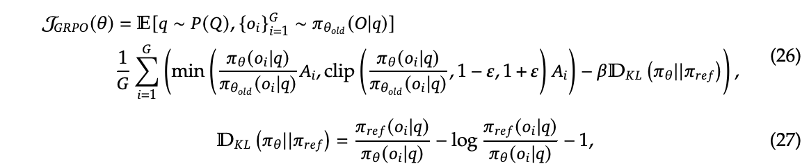
其中，\(\epsilon\) 和 \(\beta\) 是超参数；\(\pi _{ref}\) 为参考模型；\(A_{i}\) 是优势值，由每组输出对应的奖励 \(\{r_{1}, r_{2}, \ldots , r_{G}\}\) 得到：
在 RL 过程中，我们纳入来自代码、数学、写作、角色扮演和问答等不同领域的提示。这一方法不仅使模型更贴近人类偏好，也提高了基准性能，尤其是在可用 SFT 数据有限的场景中。
评估基准。除基础模型测试所用基准外，我们还在 IFEval（Zhou et al., 2023）、FRAMES（Krishna et al., 2024）、LongBench v2（Bai et al., 2024）、GPQA（Rein et al., 2023）、SimpleQA（OpenAI, 2024c）、C-SimpleQA（He et al., 2024）、SWE-Bench Verified（OpenAI, 2024d）、Aider1、LiveCodeBench（Jain et al., 2024）（2024 年 8 月至 11 月的问题）、Codeforces2、中国高中数学奥林匹克（CNMO 2024）3以及 2024 年美国数学邀请赛（AIME 2024）（MAA, 2024）上评估指令模型。
比较基线。我们将聊天模型与多个强大基线进行全面评估比较，包括 DeepSeek-V2-0506、DeepSeek-V2.5-0905、Qwen2.5 72B Instruct、LLaMA-3.1 405B Instruct、Claude-Sonnet-3.5-1022 和 GPT-4o-0513。对于 DeepSeek-V2 系列，我们选择最具代表性的变体进行比较。闭源模型通过各自 API 评估。
详细评估配置。对于 MMLU、DROP、GPQA 和 SimpleQA 等标准基准，我们采用 simple-evals 框架4的评估提示。
1 https://aider.chat
2 https://codeforces.com
3 https://www.cms.org.cn/Home/comp/comp/cid/12.html
4 https://github.com/openai/simple-evals
我们在零样本设置中，为 MMLU-Redux 使用 Zero-Eval 提示格式（Lin, 2024）。其他数据集遵循原始评估协议，使用数据集创建者提供的默认提示。对于代码和数学基准，HumanEval-Mul 数据集共包含 8 种主流编程语言（Python、Java、Cpp、C#、JavaScript、TypeScript、PHP 和 Bash）。我们用 CoT 和非 CoT 方法评估 LiveCodeBench 上的模型性能，数据收集时间为 2024 年 8 月至 11 月。Codeforces 数据集使用参赛者百分位衡量。SWE-Bench verified 使用 agentless 框架（Xia et al., 2024）评估。Aider 相关基准使用“diff”格式评估。数学评估方面，AIME 和 CNMO 2024 使用 0.7 的温度评估，并对 16 次运行的结果取平均，而 MATH-500 采用贪心 decoding。我们允许所有模型在每个基准上最多输出 8192 个 token。
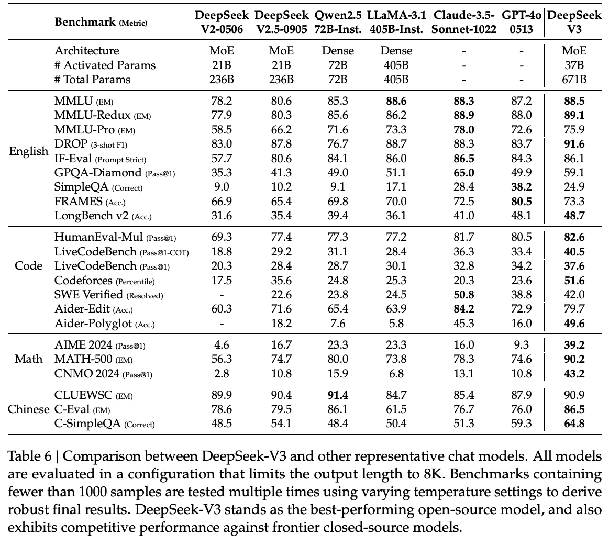
表 6 展示了评估结果，表明 DeepSeek-V3 是性能最佳的开源模型。此外，它也能与 GPT-4o、Claude-3.5-Sonnet 等前沿闭源模型竞争。
英语基准。MMLU 是广受认可的基准，旨在评估 LLM 在不同知识领域和任务上的性能。DeepSeek-V3 展现出具有竞争力的性能，与 LLaMA-3.1-405B、GPT-4o 和 Claude-Sonnet 3.5 等顶级模型相当，同时显著超越 Qwen2.5 72B。此外，在更具挑战性的教育知识基准 MMLU-Pro 上，DeepSeek-V3 表现出色，仅紧随 Claude-Sonnet 3.5。在修正标签后的 MMLU 改进版本 MMLU-Redux 上，DeepSeek-V3 超越同类模型。另外，在博士级评估平台 GPQA-Diamond 上，DeepSeek-V3 取得显著结果，仅次于 Claude 3.5 Sonnet，大幅超越其他所有竞争模型。
在 DROP、LongBench v2 和 FRAMES 等长上下文理解基准中，DeepSeek-V3 持续展现其顶级模型地位。在 DROP 的 3-shot 设置中，它取得令人印象深刻的 91.6 F1 分数，超越该类别中的所有其他模型。在需要基于 100k token 上下文进行问答的 FRAMES 基准上，DeepSeek-V3 紧随 GPT-4o，同时大幅超越所有其他模型。这表明 DeepSeek-V3 在处理超长上下文任务方面具有强大能力。它在 LongBench v2 上取得同类最佳性能，进一步验证了其长上下文能力；该数据集在 DeepSeek V3 发布前仅几周才公布。在事实知识基准 SimpleQA 上，DeepSeek-V3 落后于 GPT-4o 和 Claude-Sonnet，主要原因是其设计重点和资源分配。DeepSeek-V3 分配了更多训练 token 用于学习中文知识，因此在 C-SimpleQA 上表现卓越。在指令遵循基准上，DeepSeek-V3 显著超越其前代 DeepSeek-V2 系列，体现了它在理解并遵守用户定义格式约束方面的能力提升。
代码与数学基准。编程对 LLM 而言是一项富有挑战且实用的任务，包括 SWE-Bench-Verified 和 Aider 等面向工程的任务，以及 HumanEval 和 LiveCodeBench 等算法任务。在工程任务中，DeepSeek-V3 落后于 Claude-Sonnet-3.5-1022，但显著超越开源模型。开源 DeepSeek-V3 有望推动编程相关工程任务的发展。通过开放其强大能力，DeepSeek-V3 可以推动软件工程和算法开发等领域的创新与改进，使开发者和研究人员进一步拓展开源模型在编程任务上的能力边界。在算法任务上，DeepSeek-V3 表现出优越性能，在 HumanEval-Mul 和 LiveCodeBench 等基准上超越所有基线。这一成功可归因于其先进的知识蒸馏技术，该技术有效提高了它在算法类任务中的代码生成与问题求解能力。
在数学基准上，DeepSeek-V3 表现卓越，显著超越基线，并为非 o1 类模型建立了新的最先进水平。具体来说，在 AIME、MATH-500 和 CNMO 2024 上，DeepSeek-V3 的绝对分数比第二名 Qwen2.5 72B 高约 10%，对于如此有挑战性的基准，这是很大的差距。这一显著能力体现了从 DeepSeek-R1 蒸馏技术的有效性，证明其对非 o1 类模型很有益。
中文基准。Qwen 和 DeepSeek 是两个具有强大中英文支持能力的代表性模型系列。在事实性基准 Chinese SimpleQA 上，DeepSeek-V3 超过 Qwen2.5-72B 16.4 分，尽管 Qwen2.5 在更大的 18T token 语料上训练，比 DeepSeek-V3 的 14.8T 个（接下页）
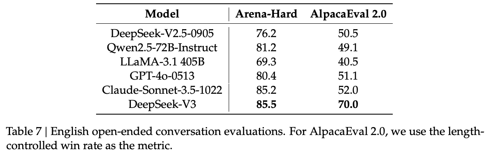
（接上页）预训练 token 多 20%。
在具有代表性的中文教育知识评估基准 C-Eval 和 CLUEWSC（中文 Winograd Schema Challenge）上，DeepSeek-V3 与 Qwen2.5-72B 表现相近，表明两个模型都针对具有挑战性的中文推理与教育任务进行了良好优化。
除标准基准外，我们还使用 LLM 作为评判者，在开放式生成任务上评估模型，结果见表 7。具体来说，我们遵循 AlpacaEval 2.0（Dubois et al., 2024）和 Arena-Hard（Li et al., 2024a）的原始配置，使用 GPT-4-Turbo-1106 作为评判者进行成对比较。在 Arena-Hard 上，DeepSeek-V3 相对基线 GPT-4-0314 取得超过 86% 的出色胜率，与 Claude-Sonnet-3.5-1022 等顶级模型相当。这体现了 DeepSeek-V3 的强大能力，尤其在处理编程和调试任务等复杂提示方面。此外，DeepSeek-V3 成为首个在 Arena-Hard 基准上超过 85% 的开源模型，实现了突破性的里程碑。这一成果显著缩小了开源与闭源模型的性能差距，为开源模型在挑战性领域中的能力建立了新标准。
同样，DeepSeek-V3 在 AlpacaEval 2.0 上表现卓越，超越闭源和开源模型。这展现了其在写作任务和直接问答场景中的出色能力。值得关注的是，它大幅超过 DeepSeek-V2.5-0905，幅度达 20%，体现了在简单任务上的显著改进，也说明了这些进步的有效性。
我们将 DeepSeek-V3 的评判能力与最先进的模型 GPT-4o 和 Claude-3.5 比较。表 8 展示这些模型在 RewardBench（Lambert et al., 2024）上的表现。DeepSeek-V3 与最佳版本 GPT-4o-0806 和 Claude-3.5-Sonnet-1022 表现相当，同时超越其他版本。此外，投票技术还能增强 DeepSeek-V3 的评判能力。因此，我们结合 DeepSeek-V3 与投票，为开放式问题提供自反馈，从而提高对齐过程的有效性和稳健性。
译注：本页正文称 Arena-Hard 胜率“超过 86%”，表 7 为 85.5；两处均按原文保留。
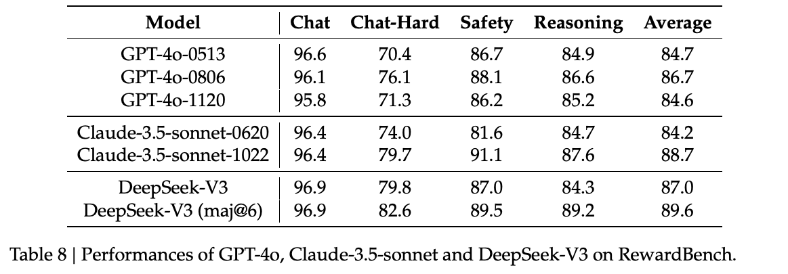
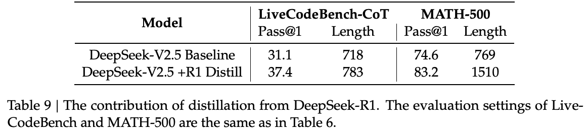
我们基于 DeepSeek-V2.5 对 DeepSeek-R1 蒸馏的贡献进行了消融研究。基线使用短 CoT 数据训练，对比模型使用上述专家 checkpoint 生成的数据。
表 9 展示了蒸馏数据的有效性，在 LiveCodeBench 和 MATH-500 基准上均有显著提升。实验揭示了一个有趣的权衡：蒸馏提高性能，但也显著增加平均回答长度。为在模型准确性和计算效率之间保持平衡，我们在 DeepSeek-V3 蒸馏中仔细选择了最优设置。
我们的研究表明，从推理模型进行知识蒸馏是后训练优化的一个有前景的方向。虽然当前工作集中于蒸馏数学与代码领域的数据，但这一方法具有在多种任务领域更广泛应用的潜力。在这些特定领域中展现的有效性表明，长 CoT 蒸馏可能有助于提高模型在其他需要复杂推理的认知任务上的性能。进一步探索这一方法在不同领域中的应用，仍是未来研究的重要方向。
奖励在 RL 中发挥关键作用，引导优化过程。在能够直接通过外部工具验证的领域，例如某些代码或数学场景，RL 展现出卓越效果。然而，在更一般的场景中，通过硬编码构建反馈机制并不现实。在 DeepSeek-V3 开发过程中，对于这些更广泛的情境，我们采用宪法式 AI 方法（Bai et al., 2022），以 DeepSeek-V3 自身的投票评估结果作为反馈来源。这种方法已经（接下页）
（接上页）产生显著对齐效果，显著提高 DeepSeek-V3 在主观评估中的性能。通过整合额外的宪法式输入，DeepSeek-V3 可以朝宪法规定的方向优化。我们认为，将补充信息与作为反馈来源的 LLM 结合的这一范式极其重要。LLM 充当通用处理器，能够将不同场景中的非结构化信息转换为奖励，最终促进 LLM 自我改进。除自奖励外，我们还致力于探索其他通用且可扩展的奖励方法，持续提升模型在一般场景中的能力。
DeepSeek-V3 通过 MTP 技术预测接下来的 2 个 token，而非仅预测紧接着的单个 token。结合 speculative decoding 框架（Leviathan et al., 2023; Xia et al., 2023），它可以显著加快模型 decoding 速度。一个自然的问题是额外预测 token 的接受率。根据评估，在不同生成主题中，第二个 token 预测的接受率介于 85% 至 90%，表现出一致的可靠性。这种高接受率使 DeepSeek-V3 的 decoding 速度显著提高，TPS（每秒 token 数）达到 1.8 倍。
本文介绍了 DeepSeek-V3，这是一个大型 MoE 语言模型，总参数量 671B，激活参数量 37B，在 14.8T 个 token 上训练。除 MLA 和 DeepSeekMoE 架构外，它还首创了无辅助损失负载均衡策略，并设置 MTP 训练目标以提升性能。得益于 FP8 训练支持和精细工程优化，DeepSeek-V3 的训练成本低廉。后训练也成功蒸馏了 DeepSeek-R1 系列模型的推理能力。全面评估表明，DeepSeek-V3 已成为当前最强的开源模型，性能与 GPT-4o 和 Claude-3.5-Sonnet 等领先闭源模型相当。尽管性能强大，它仍维持低廉的训练成本。完整训练，包括预训练、上下文长度扩展与后训练，仅需 2.788M H800 GPU 小时。
在认可其强大性能和成本效益的同时，我们也认识到 DeepSeek-V3 存在一些局限，尤其是在部署方面。首先，为确保高效推理，DeepSeek-V3 推荐的部署单元相对较大，可能给小型团队带来负担。其次，虽然我们的 DeepSeek-V3 部署策略已经实现超过 DeepSeek-V2 两倍的端到端生成速度，但仍有进一步提升的空间。所幸，随着更先进硬件的发展，预计这些局限会自然得到解决。
DeepSeek 始终坚持长期主义的开源模型路线，旨在稳步接近 AGI 的最终目标。未来，我们计划有策略地投入以下研究方向。
AI@Meta. Llama 3 模型卡, 2024a. URL https://github.com/meta-llama/llama3/blob/main/MODEL_CARD.md.
AI@Meta. Llama 3.1 模型卡, 2024b. URL https://github.com/meta-llama/llama-models/blob/main/models/llama3_1/MODEL_CARD.md.
Anthropic. Claude 3.5 sonnet, 2024. URL https://www.anthropic.com/news/claude-3-5-sonnet.
J. Austin, A. Odena, M. Nye, M. Bosma, H. Michalewski, D. Dohan, E. Jiang, C. Cai, M. Terry, Q. Le, 等 使用 LLM 进行程序合成. arXiv 预印本 arXiv:2108.07732, 2021.
Y. Bai, S. Kadavath, S. Kundu, A. Askell, J. Kernion, A. Jones, A. Chen, A. Goldie, A. Mirhoseini, C. McKinnon, 等 宪法式 AI：通过 AI 反馈实现无害性. arXiv 预印本 arXiv:2212.08073, 2022.
Y. Bai, S. Tu, J. Zhang, H. Peng, X. Wang, X. Lv, S. Cao, J. Xu, L. Hou, Y. Dong, J. Tang, and J. Li. LongBench v2：迈向对真实长上下文多任务的更深入理解与推理. arXiv 预印本 arXiv:2412.15204, 2024.
M. Bauer, S. Treichler, and A. Aiken. Singe：利用 warp 专门化实现 GPU 高性能. In Proceedings of the 19th ACM SIGPLAN Symposium on Principles and Practice of Parallel Programming, PPoPP ’14, page 119–130, New York, NY, USA, 2014. Association for Computing Machinery. ISBN 9781450326568. doi: 10.1145/2555243.2555258. URL https://doi.org/10.1145/2555243.2555258.
Y. Bisk, R. Zellers, R. L. Bras, J. Gao, and Y. Choi. PIQA：以自然语言进行物理常识推理. In The Thirty-Fourth AAAI Conference on Artificial Intelligence, AAAI 2020, The Thirty-Second Innovative Applications of Artificial Intelligence Conference, IAAI 2020, The Tenth AAAI Symposium on Educational Advances in Artificial Intelligence, EAAI 2020, New York, NY, USA, February 7-12, 2020, pages 7432–7439. AAAI Press, 2020. doi: 10.1609/aaai.v34i05.6239. URL https://doi.org/10.1609/aaai.v34i05.6239.
M. Chen, J. Tworek, H. Jun, Q. Yuan, H. P. de Oliveira Pinto, J. Kaplan, H. Edwards, Y. Burda, N. Joseph, G. Brockman, A. Ray, R. Puri, G. Krueger, M. Petrov, H. Khlaaf, G. Sastry, P. Mishkin, B. Chan, S. Gray, N. Ryder, M. Pavlov, A. Power, L. Kaiser, M. Bavarian, C. Winter, P. Tillet, F. P. Such, D. Cummings, M. Plappert, F. Chantzis, E. Barnes, A. Herbert-Voss, W. H. Guss, A. Nichol, A. Paino, N. Tezak, J. Tang, I. Babuschkin, S. Balaji, S. Jain, W. Saunders, C. Hesse,
A. N. Carr, J. Leike, J. Achiam, V. Misra, E. Morikawa, A. Radford, M. Knight, M. Brundage, M. Murati, K. Mayer, P. Welinder, B. McGrew, D. Amodei, S. McCandlish, I. Sutskever, and W. Zaremba. 评估在代码上训练的 LLM. CoRR, abs/2107.03374, 2021. URL https://arxiv.org/abs/2107.03374.
P. Clark, I. Cowhey, O. Etzioni, T. Khot, A. Sabharwal, C. Schoenick, and O. Tafjord. 以为你已经解决了问答？试试 ARC：AI2 推理挑战. CoRR, abs/1803.05457, 2018. URL http://arxiv.org/abs/1803.05457.
K. Cobbe, V. Kosaraju, M. Bavarian, M. Chen, H. Jun, L. Kaiser, M. Plappert, J. Tworek, J. Hilton, R. Nakano, 等 训练验证器以解决数学文字题. arXiv 预印本 arXiv:2110.14168, 2021.
Y. Cui, T. Liu, W. Che, L. Xiao, Z. Chen, W. Ma, S. Wang, and G. Hu. 用于中文机器阅读理解的片段抽取数据集. In K. Inui, J. Jiang, V. Ng, and X. Wan, editors, Proceedings of the 2019 Conference on Empirical Methods in Natural Language Processing and the 9th International Joint Conference on Natural Language Processing (EMNLP-IJCNLP), pages 5883–5889, Hong Kong, China, Nov. 2019. Association for Computational Linguistics. doi: 10.18653/v1/D19-1600. URL https://aclanthology.org/D19-1600.
D. Dai, C. Deng, C. Zhao, R. X. Xu, H. Gao, D. Chen, J. Li, W. Zeng, X. Yu, Y. Wu, Z. Xie, Y. K. Li, P. Huang, F. Luo, C. Ruan, Z. Sui, and W. Liang. DeepSeekMoE：迈向 MoE 语言模型的极致专家专门化. CoRR, abs/2401.06066, 2024. URL https://doi.org/10.48550/arXiv.2401.06066.
DeepSeek-AI. DeepSeek-Coder-V2：打破闭源模型在代码智能领域的壁垒. CoRR, abs/2406.11931, 2024a. URL https://doi.org/10.48550/arXiv.2406.11931.
DeepSeek-AI. DeepSeek LLM：以长期主义扩展开源语言模型. CoRR, abs/2401.02954, 2024b. URL https://doi.org/10.48550/arXiv.2401.02954.
DeepSeek-AI. DeepSeek-V2：强大、经济且高效的 MoE 语言模型. CoRR, abs/2405.04434, 2024c. URL https://doi.org/10.48550/arXiv.2405.04434.
T. Dettmers, M. Lewis, Y. Belkada, and L. Zettlemoyer. Gpt3. int8()：面向大规模 Transformer 的 8 位矩阵乘法. Advances in Neural Information Processing Systems, 35:30318– 30332, 2022.
H. Ding, Z. Wang, G. Paolini, V. Kumar, A. Deoras, D. Roth, and S. Soatto. 更少的截断改善语言建模. arXiv 预印本 arXiv:2404.10830, 2024.
D. Dua, Y. Wang, P. Dasigi, G. Stanovsky, S. Singh, and M. Gardner. DROP：需要对段落进行离散推理的阅读理解基准. In J. Burstein, C. Doran, and T. Solorio, editors, Proceedings of the 2019 Conference of the North American Chapter of the Association for Computational Linguistics: Human Language Technologies, NAACL-HLT 2019, Minneapolis, MN, USA, June 2-7, 2019, Volume 1 (Long and Short Papers), pages 2368– 2378. Association for Computational Linguistics, 2019. doi: 10.18653/V1/N19-1246. URL https://doi.org/10.18653/v1/n19-1246.
Y. Dubois, B. Galambosi, P. Liang, and T. B. Hashimoto. 长度控制的 AlpacaEval：消除自动评估器偏差的简单方法. arXiv 预印本 arXiv:2404.04475, 2024.
W. Fedus, B. Zoph, and N. Shazeer. Switch Transformer：以简单高效的稀疏性扩展至万亿参数模型. CoRR, abs/2101.03961, 2021. URL https://arxiv.org/abs/2101.03961.
M. Fishman, B. Chmiel, R. Banner, and D. Soudry. 将 FP8 训练扩展至万亿 token 的 LLM. arXiv 预印本 arXiv:2409.12517, 2024.
E. Frantar, S. Ashkboos, T. Hoefler, and D. Alistarh. GPTQ：生成式预训练 Transformer 的精确 PTQ. arXiv 预印本 arXiv:2210.17323, 2022.
L. Gao, S. Biderman, S. Black, L. Golding, T. Hoppe, C. Foster, J. Phang, H. He, A. Thite, N. Nabeshima, 等 The Pile：用于语言建模的 800GB 多样化文本数据集. arXiv 预印本 arXiv:2101.00027, 2020.
A. P. Gema, J. O. J. Leang, G. Hong, A. Devoto, A. C. M. Mancino, R. Saxena, X. He, Y. Zhao, X. Du, M. R. G. Madani, C. Barale, R. McHardy, J. Harris, J. Kaddour, E. van Krieken, and P. Minervini. 我们已经完成 MMLU 了吗？ CoRR, abs/2406.04127, 2024. URL https://doi.org/10.48550/arXiv.2406.04127.
F. Gloeckle, B. Y. Idrissi, B. Rozière, D. Lopez-Paz, and G. Synnaeve. 通过 MTP 实现更好、更快的 LLM. In Forty-first International Conference on Machine Learning, ICML 2024, Vienna, Austria, July 21-27, 2024. OpenReview.net, 2024. URL https://openreview.net/forum?id=pEWAcejiU2.
Google. 我们的下一代模型：Gemini 1.5, 2024. URL https://blog.google/technology/ai/google-gemini-next-generation-model-february-2024.
R. L. Graham, D. Bureddy, P. Lui, H. Rosenstock, G. Shainer, G. Bloch, D. Goldenerg, M. Dubman, S. Kotchubievsky, V. Koushnir, 等 可扩展层次聚合协议（SHArP）：用于高效数据归约的硬件架构. In 2016 First International Workshop on Communication Optimizations in HPC (COMHPC), pages 1–10. IEEE, 2016.
A. Gu, B. Rozière, H. Leather, A. Solar-Lezama, G. Synnaeve, and S. I. Wang. CRUXEval：代码推理、理解与执行基准, 2024.
D. Guo, Q. Zhu, D. Yang, Z. Xie, K. Dong, W. Zhang, G. Chen, X. Bi, Y. Wu, Y. K. Li, F. Luo, Y. Xiong, and W. Liang. DeepSeek-Coder：当 LLM 遇见编程——代码智能的崛起. CoRR, abs/2401.14196, 2024. URL https://doi.org/10.48550/arXiv.2401.14196.
A. Harlap, D. Narayanan, A. Phanishayee, V. Seshadri, N. Devanur, G. Ganger, and P. Gibbons. PipeDream：快速高效的 PP DNN 训练, 2018. URL https://arxiv.org/abs/1806.03377.
B. He, L. Noci, D. Paliotta, I. Schlag, and T. Hofmann. 理解并尽量减少 Transformer 训练中的异常特征. In The Thirty-eighth Annual Conference on Neural Information Processing Systems.
Y. He, S. Li, J. Liu, Y. Tan, W. Wang, H. Huang, X. Bu, H. Guo, C. Hu, B. Zheng, 等 Chinese SimpleQA：LLM 的中文事实性评估. arXiv 预印本 arXiv:2411.07140, 2024.
D. Hendrycks, C. Burns, S. Basart, A. Zou, M. Mazeika, D. Song, and J. Steinhardt. 衡量大规模多任务语言理解能力. arXiv 预印本 arXiv:2009.03300, 2020.
D. Hendrycks, C. Burns, S. Kadavath, A. Arora, S. Basart, E. Tang, D. Song, and J. Steinhardt. 使用 MATH 数据集衡量数学问题求解能力. arXiv 预印本 arXiv:2103.03874, 2021.
Y. Huang, Y. Bai, Z. Zhu, J. Zhang, J. Zhang, T. Su, J. Liu, C. Lv, Y. Zhang, J. Lei, 等 C-Eval：面向基础模型的多层次、多学科中文评估套件. arXiv 预印本 arXiv:2305.08322, 2023.
N. Jain, K. Han, A. Gu, W. Li, F. Yan, T. Zhang, S. Wang, A. Solar-Lezama, K. Sen, and I. Stoica. LiveCodeBench：LLM 代码能力的全面无污染评估. CoRR, abs/2403.07974, 2024. URL https://doi.org/10.48550/arXiv.2403.07974.
A. Q. Jiang, A. Sablayrolles, A. Mensch, C. Bamford, D. S. Chaplot, D. d. l. Casas, F. Bressand, G. Lengyel, G. Lample, L. Saulnier, 等 Mistral 7B. arXiv 预印本 arXiv:2310.06825, 2023.
M. Joshi, E. Choi, D. Weld, and L. Zettlemoyer. TriviaQA：用于阅读理解的大规模远程监督挑战数据集. In R. Barzilay and M.-Y. Kan, editors, Proceedings of the 55th Annual Meeting of the Association for Computational Linguistics (Volume 1: Long Papers), pages 1601–1611, Vancouver, Canada, July 2017. Association for Computational Linguistics. doi: 10.18653/v1/P17-1147. URL https://aclanthology.org/P17-1147.
D. Kalamkar, D. Mudigere, N. Mellempudi, D. Das, K. Banerjee, S. Avancha, D. T. Vooturi, N. Jammalamadaka, J. Huang, H. Yuen, 等 用于深度学习训练的 bfloat16 研究. arXiv 预印本 arXiv:1905.12322, 2019.
S. Krishna, K. Krishna, A. Mohananey, S. Schwarcz, A. Stambler, S. Upadhyay, and M. Faruqui. 事实、检索与推理：RAG 的统一评估. CoRR, abs/2409.12941, 2024. doi: 10.48550/ARXIV.2409.12941. URL https://doi.org/10.48550/arXiv.2409.12941.
T. Kwiatkowski, J. Palomaki, O. Redfield, M. Collins, A. P. Parikh, C. Alberti, D. Epstein, I. Polosukhin, J. Devlin, K. Lee, K. Toutanova, L. Jones, M. Kelcey, M. Chang, A. M. Dai, J. Uszkoreit, Q. Le, and S. Petrov. Natural Questions：问答研究基准. Trans. Assoc. Comput. Linguistics, 7:452–466, 2019. doi: 10.1162/tacl\_a\_00276. URL https://doi.org/10.1162/tacl_a_00276.
G. Lai, Q. Xie, H. Liu, Y. Yang, and E. H. Hovy. RACE：源于考试的大规模阅读理解数据集. In M. Palmer, R. Hwa, and S. Riedel, editors, Proceedings of the 2017 Conference on Empirical Methods in Natural Language Processing, EMNLP 2017, Copenhagen, Denmark, September 9-11, 2017, pages 785–794. Association for Computational Linguistics, 2017. doi: 10.18653/V1/D17-1082. URL https://doi.org/10.18653/v1/d17-1082.
N. Lambert, V. Pyatkin, J. Morrison, L. Miranda, B. Y. Lin, K. Chandu, N. Dziri, S. Kumar, T. Zick, Y. Choi, 等 RewardBench：评估语言建模的 RM. arXiv 预印本 arXiv:2403.13787, 2024.
D. Lepikhin, H. Lee, Y. Xu, D. Chen, O. Firat, Y. Huang, M. Krikun, N. Shazeer, and Z. Chen. GShard：通过条件计算和自动分片扩展巨型模型. In 9th International Conference on Learning Representations, ICLR 2021. OpenReview.net, 2021. URL https://openreview.net/forum?id=qrwe7XHTmYb.
Y. Leviathan, M. Kalman, and Y. Matias. 通过 speculative decoding 实现 Transformer 快速推理. In International Conference on Machine Learning, ICML 2023, 23-29 July 2023, Honolulu, Hawaii, USA, volume 202 of Proceedings of Machine Learning Research, pages 19274–19286. PMLR, 2023. URL https://proceedings.mlr.press/v202/leviathan23a.html.
H. Li, Y. Zhang, F. Koto, Y. Yang, H. Zhao, Y. Gong, N. Duan, and T. Baldwin. CMMLU：衡量大规模中文多任务语言理解能力. arXiv 预印本 arXiv:2306.09212, 2023.
S. Li and T. Hoefler. Chimera：利用双向流水线高效训练大规模神经网络. In Proceedings of the International Conference for High Performance Computing, Networking, Storage and Analysis, SC ’21, page 1–14. ACM, Nov. 2021. doi: 10.1145/345881 7.3476145. URL http://dx.doi.org/10.1145/3458817.3476145.
T. Li, W.-L. Chiang, E. Frick, L. Dunlap, T. Wu, B. Zhu, J. E. Gonzalez, and I. Stoica. 从众包数据到高质量基准：Arena-Hard 与 BenchBuilder 流程. arXiv 预印本 arXiv:2406.11939, 2024a.
W. Li, F. Qi, M. Sun, X. Yi, and J. Zhang. CCPM：中文古典诗歌匹配数据集, 2021.
Y. Li, F. Wei, C. Zhang, and H. Zhang. EAGLE：投机采样需要重新思考特征不确定性. In Forty-first International Conference on Machine Learning, ICML 2024, Vienna, Austria, July 21-27, 2024. OpenReview.net, 2024b. URL https://openreview.net/forum?id=1NdN7eXyb4.
B. Y. Lin. ZeroEval：语言模型评估的统一框架, July 2024. URL https://github.com/WildEval/ZeroEval.
I. Loshchilov and F. Hutter. 解耦权重衰减正则化. arXiv 预印本 arXiv:1711.05101, 2017.
S. Lundberg. 提示设计的艺术：提示边界与 token 修复, 2023. URL https://towardsdatascience.com/the-art-of-prompt-design-prompt-boundaries-and-token-healing-3b2448b0be38.
Y. Luo, Z. Zhang, R. Wu, H. Liu, Y. Jin, K. Zheng, M. Wang, Z. He, G. Hu, L. Chen, 等 用于深度学习的 Ascend HiFloat8 格式. arXiv 预印本 arXiv:2409.16626, 2024.
MAA. 美国数学邀请赛——AIME. In American Invitational Mathematics Examination - AIME 2024, February 2024. URL https://maa.org/math-competitions/american-invitational-mathematics-examination-aime.
P. Micikevicius, D. Stosic, N. Burgess, M. Cornea, P. Dubey, R. Grisenthwaite, S. Ha, A. Heinecke, P. Judd, J. Kamalu, 等 用于深度学习的 FP8 格式. arXiv 预印本 arXiv:2209.05433, 2022.
Mistral. 更便宜、更好、更快、更强：持续推进 AI 前沿，让所有人都能使用, 2024. URL https://mistral.ai/news/mixtral-8x22b.
S. Narang, G. Diamos, E. Elsen, P. Micikevicius, J. Alben, D. Garcia, B. Ginsburg, M. Houston, O. Kuchaiev, G. Venkatesh, 等 混合精度训练. In Int. Conf. on Learning Representation, 2017.
B. Noune, P. Jones, D. Justus, D. Masters, and C. Luschi. 用于深度神经网络的 8 位数值格式. arXiv 预印本 arXiv:2206.02915, 2022.
NVIDIA. 使用 NVIDIA Magnum IO NVSHMEM 和 GPUDirect Async 提高 HPC 系统网络性能. https://developer.nvidia.com/blog/improving-network-performance-of-hpc-systems-using-nvidia-magnum-io-nvshmem-and-gpudirect-async, 2022.
NVIDIA. Blackwell 架构. https://www.nvidia.com/en-us/data-center/technologies/blackwell-architecture/, 2024a.
NVIDIA. TransformerEngine, 2024b. URL https://github.com/NVIDIA/TransformerEngine.
OpenAI. 你好，GPT-4o, 2024a. URL https://openai.com/index/hello-gpt-4o/.
OpenAI. 多语言大规模多任务语言理解（MMMLU）, 2024b. URL https://huggingface.co/datasets/openai/MMMLU.
OpenAI. 介绍 SimpleQA, 2024c. URL https://openai.com/index/introducing-simpleqa/.
OpenAI. 介绍 SWE-bench Verified：我们正在发布一个经过人工验证的 SWE-bench 子集，该子集更……, 2024d. URL https://openai.com/index/introducing-swe-bench-verified/.
B. Peng, J. Quesnelle, H. Fan, and E. Shippole. YaRN：LLM 的高效上下文窗口扩展. arXiv 预印本 arXiv:2309.00071, 2023a.
H. Peng, K. Wu, Y. Wei, G. Zhao, Y. Yang, Z. Liu, Y. Xiong, Z. Yang, B. Ni, J. Hu, 等 FP8-LM：训练 FP8 LLM. arXiv 预印本 arXiv:2310.18313, 2023b.
P. Qi, X. Wan, G. Huang, and M. Lin. 零气泡 PP. arXiv 预印本 arXiv:2401.10241, 2023a.
P. Qi, X. Wan, G. Huang, and M. Lin. 零气泡 PP, 2023b. URL https://arxiv.org/abs/2401.10241.
Qwen. Qwen 技术报告. arXiv 预印本 arXiv:2309.16609, 2023.
Qwen. 介绍 Qwen1.5, 2024a. URL https://qwenlm.github.io/blog/qwen1.5.
Qwen. Qwen2.5：基础模型的盛会, 2024b. URL https://qwenlm.github.io/blog/qwen2.5.
S. Rajbhandari, J. Rasley, O. Ruwase, and Y. He. ZeRO：面向万亿参数模型训练的显存优化. In SC20: International Conference for High Performance Computing, Networking, Storage and Analysis, pages 1–16. IEEE, 2020.
D. Rein, B. L. Hou, A. C. Stickland, J. Petty, R. Y. Pang, J. Dirani, J. Michael, and S. R. Bowman. GPQA：研究生级、无法依靠 Google 搜索解答的问答基准. arXiv 预印本 arXiv:2311.12022, 2023.
B. D. Rouhani, R. Zhao, A. More, M. Hall, A. Khodamoradi, S. Deng, D. Choudhary, M. Cornea, E. Dellinger, K. Denolf, 等 用于深度学习的微缩放数据格式. arXiv 预印本 arXiv:2310.10537, 2023a.
B. D. Rouhani, R. Zhao, A. More, M. Hall, A. Khodamoradi, S. Deng, D. Choudhary, M. Cornea, E. Dellinger, K. Denolf, 等 用于深度学习的微缩放数据格式. arXiv 预印本 arXiv:2310.10537, 2023b.
K. Sakaguchi, R. L. Bras, C. Bhagavatula, and Y. Choi. WinoGrande：大规模对抗式 Winograd Schema 挑战, 2019.
Z. Shao, P. Wang, Q. Zhu, R. Xu, J. Song, M. Zhang, Y. Li, Y. Wu, and D. Guo. DeepSeekMath：拓展开源语言模型的数学推理极限. arXiv 预印本 arXiv:2402.03300, 2024.
N. Shazeer, A. Mirhoseini, K. Maziarz, A. Davis, Q. V. Le, G. E. Hinton, and J. Dean. 超大规模神经网络：稀疏门控 MoE 层. In 5th International Conference on Learning Representations, ICLR 2017. OpenReview.net, 2017. URL https://openreview.net/forum?id=B1ckMDqlg.
F. Shi, M. Suzgun, M. Freitag, X. Wang, S. Srivats, S. Vosoughi, H. W. Chung, Y. Tay, S. Ruder, D. Zhou, D. Das, and J. Wei. 语言模型是多语言 CoT 推理器. In The Eleventh International Conference on Learning Representations, ICLR 2023, Kigali, Rwanda, May 1-5, 2023. OpenReview.net, 2023. URL https://openreview.net/forum?id=fR3wGCk-IXp.
Y. Shibata, T. Kida, S. Fukamachi, M. Takeda, A. Shinohara, T. Shinohara, and S. Arikawa. BPE：加速模式匹配的文本压缩方案. 1999.
J. Su, M. Ahmed, Y. Lu, S. Pan, W. Bo, and Y. Liu. RoFormer：以 RoPE 增强的 Transformer. Neurocomputing, 568:127063, 2024.
K. Sun, D. Yu, D. Yu, and C. Cardie. 研究面向高难度中文机器阅读理解的先验知识, 2019a.
M. Sun, X. Chen, J. Z. Kolter, and Z. Liu. LLM 中的巨大激活值. arXiv 预印本 arXiv:2402.17762, 2024.
X. Sun, J. Choi, C.-Y. Chen, N. Wang, S. Venkataramani, V. V. Srinivasan, X. Cui, W. Zhang, and K. Gopalakrishnan. 深度神经网络的混合 8 位浮点（HFP8）训练与推理. Advances in neural information processing systems, 32, 2019b.
M. Suzgun, N. Scales, N. Schärli, S. Gehrmann, Y. Tay, H. W. Chung, A. Chowdhery, Q. V. Le, E. H. Chi, D. Zhou, 等 高难度 BigBench 任务及 CoT 能否解决它们. arXiv 预印本 arXiv:2210.09261, 2022.
V. Thakkar, P. Ramani, C. Cecka, A. Shivam, H. Lu, E. Yan, J. Kosaian, M. Hoemmen, H. Wu, A. Kerr, M. Nicely, D. Merrill, D. Blasig, F. Qiao, P. Majcher, P. Springer, M. Hohnerbach, J. Wang, and M. Gupta. CUTLASS, Jan. 2023. URL https://github.com/NVIDIA/cutlass.
H. Touvron, T. Lavril, G. Izacard, X. Martinet, M.-A. Lachaux, T. Lacroix, B. Rozière, N. Goyal, E. Hambro, F. Azhar, 等 LLaMA：开放高效的基础语言模型. arXiv 预印本 arXiv:2302.13971, 2023a.
H. Touvron, L. Martin, K. Stone, P. Albert, A. Almahairi, Y. Babaei, N. Bashlykov, S. Batra, P. Bhargava, S. Bhosale, D. Bikel, L. Blecher, C. Canton-Ferrer, M. Chen, G. Cucurull, D. Esiobu, J. Fernandes, J. Fu, W. Fu, B. Fuller, C. Gao, V. Goswami, N. Goyal, A. Hartshorn, S. Hosseini,
R. Hou, H. Inan, M. Kardas, V. Kerkez, M. Khabsa, I. Kloumann, A. Korenev, P. S. Koura, M. Lachaux, T. Lavril, J. Lee, D. Liskovich, Y. Lu, Y. Mao, X. Martinet, T. Mihaylov, P. Mishra, I. Molybog, Y. Nie, A. Poulton, J. Reizenstein, R. Rungta, K. Saladi, A. Schelten, R. Silva, E. M. Smith, R. Subramanian, X. E. Tan, B. Tang, R. Taylor, A. Williams, J. X. Kuan, P. Xu, Z. Yan, I. Zarov, Y. Zhang, A. Fan, M. Kambadur, S. Narang, A. Rodriguez, R. Stojnic, S. Edunov, and T. Scialom. Llama 2：开放的基础模型与微调聊天模型. CoRR, abs/2307.09288, 2023b. doi: 10.48550/arXiv.2307.09288. URL https://doi.org/10.48550/arXiv.2307.09288.
A. Vaswani, N. Shazeer, N. Parmar, J. Uszkoreit, L. Jones, A. N. Gomez, Ł. Kaiser, and I. Polosukhin. Attention 就是你所需要的一切. Advances in neural information processing systems, 30, 2017.
L. Wang, H. Gao, C. Zhao, X. Sun, and D. Dai. MoE 的无辅助损失负载均衡策略. CoRR, abs/2408.15664, 2024a. URL https://doi.org/10.48550/arXiv.2408.15664.
Y. Wang, X. Ma, G. Zhang, Y. Ni, A. Chandra, S. Guo, W. Ren, A. Arulraj, X. He, Z. Jiang, T. Li, M. Ku, K. Wang, A. Zhuang, R. Fan, X. Yue, and W. Chen. MMLU-Pro：更稳健、更具挑战性的多任务语言理解基准. CoRR, abs/2406.01574, 2024b. URL https://doi.org/10.48550/arXiv.2406.01574.
T. Wei, J. Luan, W. Liu, S. Dong, and B. Wang. CMath：你的语言模型能通过中国小学数学考试吗？, 2023.
M. Wortsman, T. Dettmers, L. Zettlemoyer, A. Morcos, A. Farhadi, and L. Schmidt. 大规模 VLM 的稳定低精度训练. Advances in Neural Information Processing Systems, 36:10271–10298, 2023.
H. Xi, C. Li, J. Chen, and J. Zhu. 使用 4 位整数训练 Transformer. Advances in Neural Information Processing Systems, 36:49146–49168, 2023.
C. S. Xia, Y. Deng, S. Dunn, and L. Zhang. Agentless：揭开基于 LLM 的软件工程 agent 的面纱. arXiv 预印本, 2024.
H. Xia, T. Ge, P. Wang, S. Chen, F. Wei, and Z. Sui. Speculative decoding：利用投机执行加速 seq2seq 生成. In Findings of the Association for Computational Linguistics: EMNLP 2023, Singapore, December 6-10, 2023, pages 3909–3925. Association for Computational Linguistics, 2023. URL https://doi.org/10.18653/v1/2023.findings-emnlp.257.
G. Xiao, J. Lin, M. Seznec, H. Wu, J. Demouth, and S. Han. SmoothQuant：LLM 的准确高效 PTQ. In International Conference on Machine Learning, pages 38087–38099. PMLR, 2023.
L. Xu, H. Hu, X. Zhang, L. Li, C. Cao, Y. Li, Y. Xu, K. Sun, D. Yu, C. Yu, Y. Tian, Q. Dong, W. Liu, B. Shi, Y. Cui, J. Li, J. Zeng, R. Wang, W. Xie, Y. Li, Y. Patterson, Z. Tian, Y. Zhang, H. Zhou, S. Liu, Z. Zhao, Q. Zhao, C. Yue, X. Zhang, Z. Yang, K. Richardson, and Z. Lan. CLUE：中文语言理解评估基准. In D. Scott, N. Bel, and C. Zong, editors, Proceedings of the 28th International Conference on Computational Linguistics, COLING 2020, Barcelona, Spain (Online), December 8-13, 2020, pages 4762–4772. International Committee on Computational Linguistics, 2020. doi: 10.18653/V1/2020.COLING-MAIN.419. URL https://doi.org/10.18653/v1/2020.coling-main.419.
R. Zellers, A. Holtzman, Y. Bisk, A. Farhadi, and Y. Choi. HellaSwag：机器真的能补完你的句子吗？ In A. Korhonen, D. R. Traum, and L. Màrquez, editors, Proceedings of the 57th Conference of the Association for Computational Linguistics, ACL 2019, Florence, Italy, July 28- August 2, 2019, Volume 1: Long Papers, pages 4791–4800. Association for Computational Linguistics, 2019. doi: 10.18653/v1/p19-1472. URL https://doi.org/10.18653/v1/p19-1472.
W. Zhong, R. Cui, Y. Guo, Y. Liang, S. Lu, Y. Wang, A. Saied, W. Chen, and N. Duan. AGIEval：以人为中心的基础模型评估基准. CoRR, abs/2304.06364, 2023. doi: 10.48550/arXiv.2304.06364. URL https://doi.org/10.48550/arXiv.2304.06364.
J. Zhou, T. Lu, S. Mishra, S. Brahma, S. Basu, Y. Luan, D. Zhou, and L. Hou. LLM 的指令遵循评估. arXiv 预印本 arXiv:2311.07911, 2023.
在每个角色类别中，作者按名字的字母顺序排列。带 * 标记的姓名表示已离开我们团队的人员。
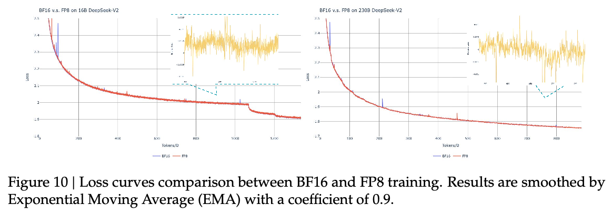
我们在两个不同规模的基线模型上，将 FP8 混合精度框架与 BF16 训练比较，以验证该框架。小规模下，在 1.33T 个 token 上训练总参数量约 16B 的基线 MoE 模型；大规模下，在约 0.9T 个 token 上训练总参数量约 230B 的基线 MoE 模型。图 10 展示训练曲线，并表明在我们的高精度累加与细粒度量化策略下，相对误差保持低于 0.25%。
虽然我们的小块级细粒度量化有效减轻了特征 outlier 引入的误差，但它要求激活值量化采用不同分组：前向传播为 1×128，反向传播为 128×1。激活值 gradient 也需要类似过程。一种直接策略是像量化模型权重一样，对每 128×128 个元素应用块级量化。这样，反向传播仅需转置。因此，我们进行了一项实验，对所有与 Dgrad 相关的张量采用块级量化。结果表明，计算激活值 gradient 并以链式方式向浅层反向传播的 Dgrad 操作对精度高度敏感。具体而言，对激活值 gradient 采用块级量化，会导致（接下页）
（接上页）一个总参数量约 16B、训练了约 300B 个 token 的 MoE 模型发散。我们推测，这种敏感性源于激活值 gradient 在 token 之间高度不均衡，造成与 token 相关的 outlier（Xi et al., 2023）。块级量化方法无法有效处理这些 outlier。
我们记录了 16B 辅助损失基线模型和无辅助损失模型在 Pile 测试集上的专家负载。如图 10 所示，无辅助损失模型在所有层中都倾向于表现出更明显的专家专门化。
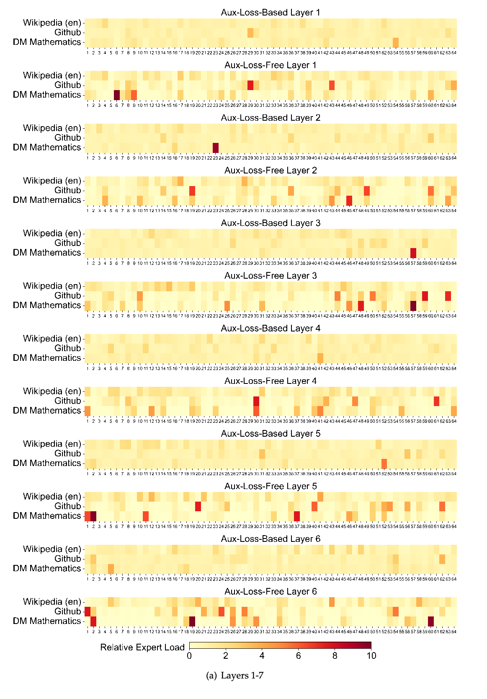
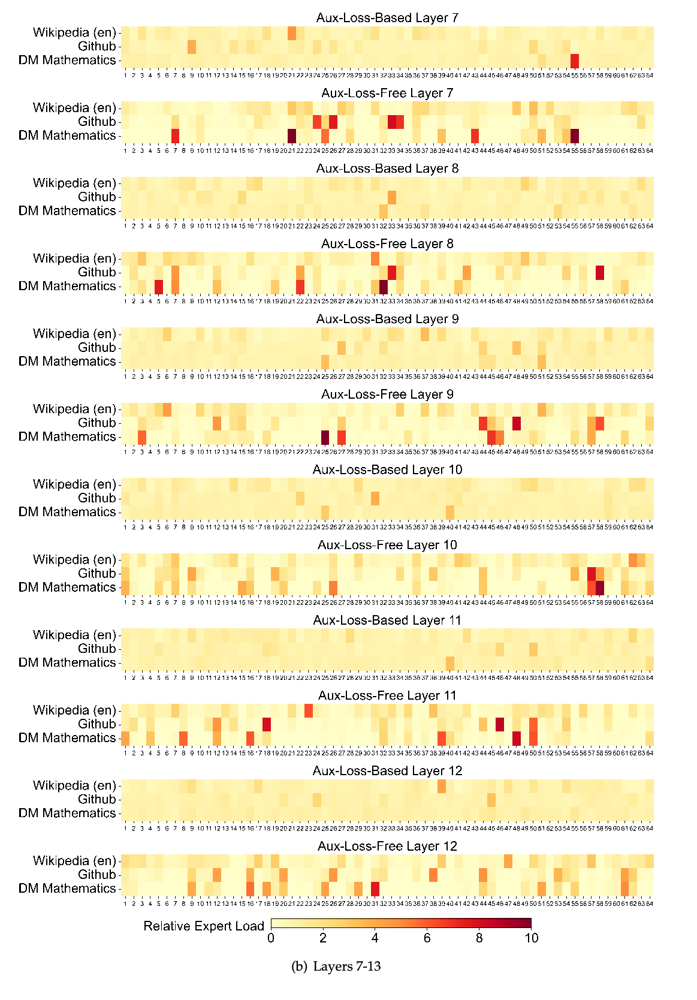
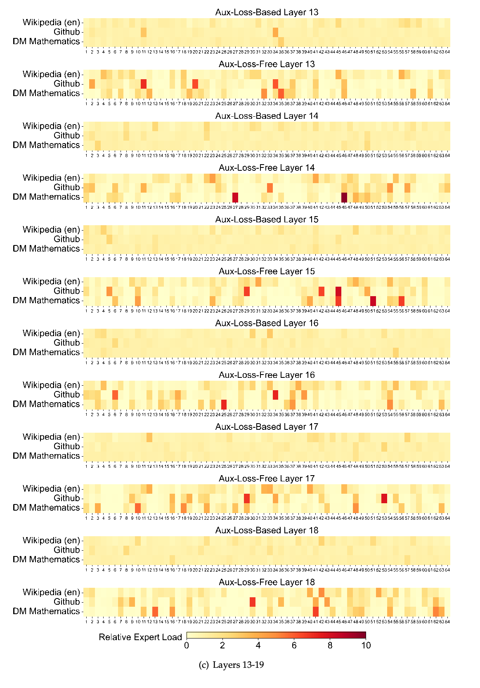
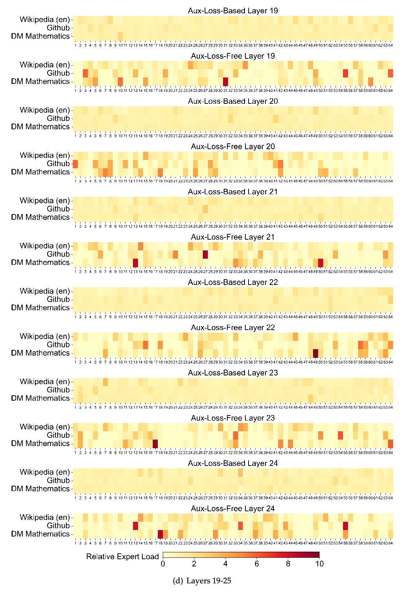
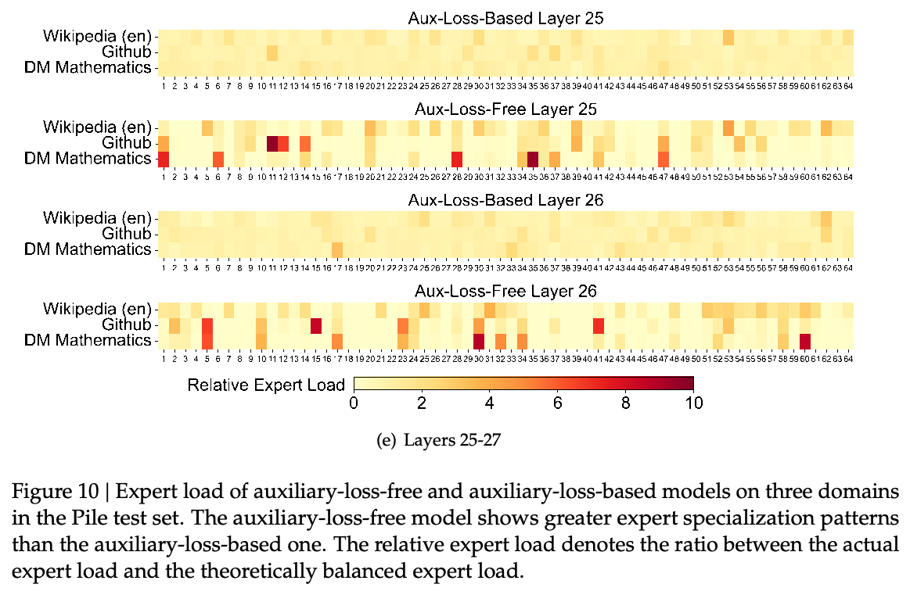